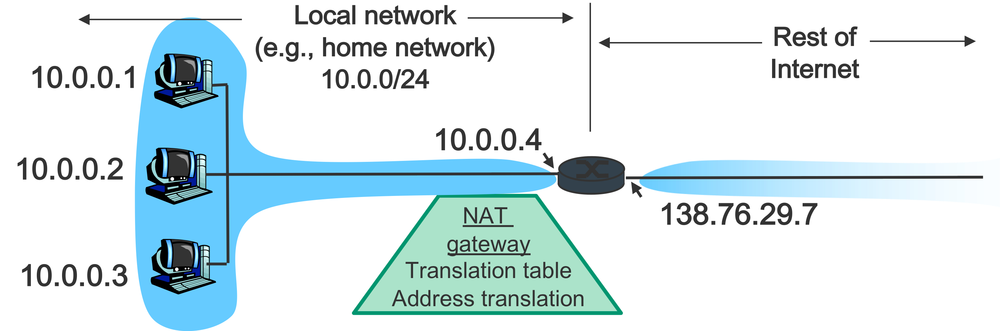
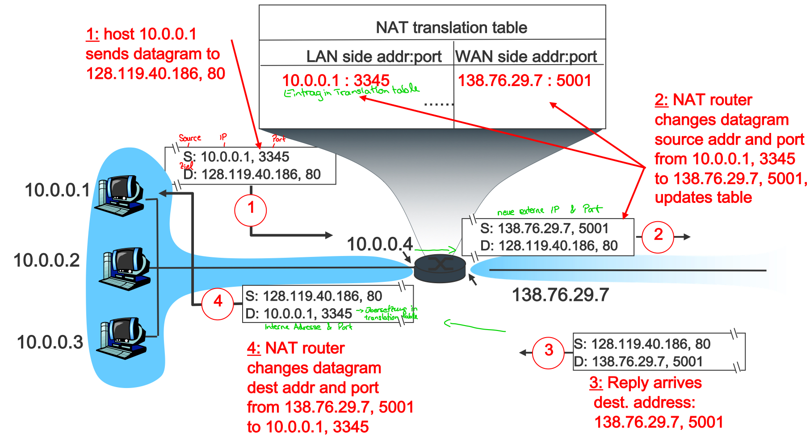
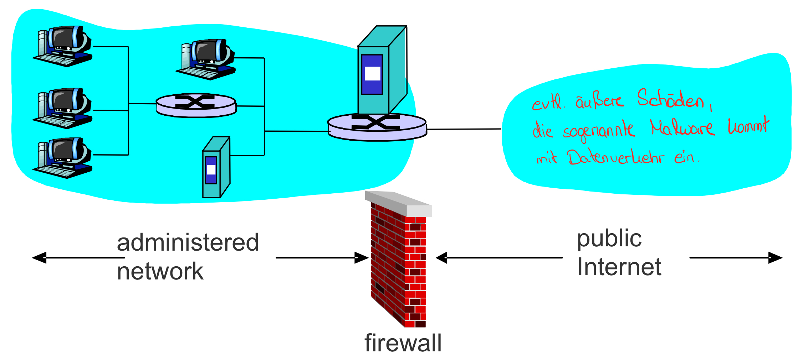
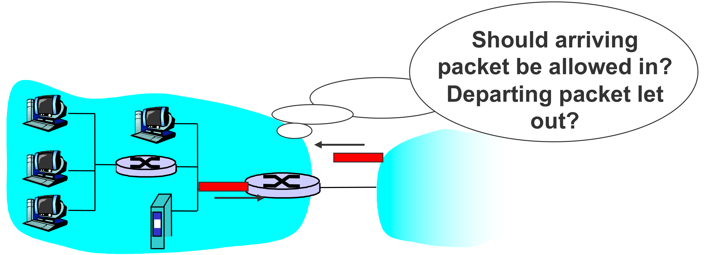
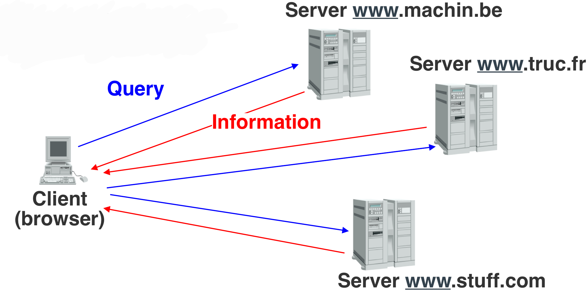
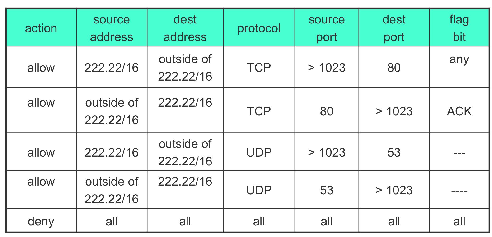

<div class="block">
  <div class="container site-border">
    <h2>Klassifikation von Kommunikationssystemen</h2>
    
    <p></p>
    <h2>Netzwerk</h2>
    <p>
      Ein Netzwerk ist eine Menge von Hardware & Software, die es erlaubt
      Informationen von einem Sender zum Empfänger weiterzuleiten.
    </p>
    <h3>Middleboxes</h3>
    <p>
      Eine Middlebox ist ein Gerät oder Dienst, der sich auf dem Übertragungsweg
      zwischen Sender und Empfänger befindet und den Verkehr nicht nur wie ein
      gewöhnlicher Router weiterleitet. Eine Middlebox kann Pakete untersuchen,
      filtern, verändern, zwischenspeichern oder auf mehrere Ziele verteilen.
      Sie arbeitet je nach Aufgabe auf unterschiedlichen Ebenen des
      Netzwerkmodells: Ein einfacher Paketfilter wertet vor allem IP-Adressen
      und Ports aus, während ein Proxy oder Application Gateway auch
      Anwendungsprotokolle wie HTTP verstehen kann.
    </p>
    <p>
      Typische Middleboxes sind Firewalls, NAT-Router, Proxies, Load Balancer,
      VPN-Gateways und Intrusion-Detection- beziehungsweise
      Intrusion-Prevention-Systeme. Manche Geräte kombinieren mehrere dieser
      Aufgaben. Ein Router wird nicht allein dadurch zur Middlebox, dass er
      Pakete weiterleitet; entscheidend ist, dass er den Verkehr zusätzlich
      kontrolliert oder verändert.
    </p>
    <p>
      Middleboxes sind nützlich, weil sie gemeinsam genutzte Funktionen an
      zentraler Stelle bereitstellen: Sie schützen Netze, sparen öffentliche
      IPv4-Adressen, verteilen Last oder ermöglichen Fernzugriff. Gleichzeitig
      liegt damit ein Teil der Kommunikation nicht mehr vollständig unter der
      Kontrolle der beiden Endpunkte. Eine Middlebox kann zusätzliche
      Verzögerung verursachen, zum Ausfallpunkt werden oder Protokolle stören,
      wenn sie Annahmen über Paketformat, Verbindungsdauer oder Ports trifft.
      Verschlüsselt eine Anwendung ihre Verbindung mit TLS, kann eine Middlebox
      den Inhalt in der Regel nicht lesen, ohne TLS gezielt zu terminieren oder
      aufzubrechen. IP-Adressen, Ports und Verkehrsmuster bleiben jedoch oft
      sichtbar.
    </p>

    <h3>NAT (Network Address Translation)</h3>
    <p>
      NAT ist eine Funktion einer Middlebox, die IP-Adressen in Paket-Headern
      umschreibt. Häufig wird NAT in IPv4-Netzen eingesetzt, damit viele Geräte
      mit privaten Adressen gemeinsam eine oder wenige öffentliche IPv4-Adressen
      verwenden können. Private Adressbereiche wie 10.0.0.0/8, 172.16.0.0/12 und
      192.168.0.0/16 werden im öffentlichen Internet nicht geroutet. Der
      NAT-Router verbindet deshalb das private Netz mit dem öffentlichen Netz.
    </p>
    <figure>
      
      <figcaption>
        Grundprinzip: Der NAT-Router verbindet private Geräte mit dem
        öffentlichen Netzwerk und übersetzt ihre Adressen.
      </figcaption>
    </figure>
    <p>
      Die Abbildung zeigt NAT an der Grenze zwischen zwei Netzen. Innerhalb des
      privaten Netzes werden die Geräte über ihre privaten IP-Adressen
      angesprochen. Diese Adressen sind im Internet nicht eindeutig und werden
      dort nicht weitergeleitet. Deshalb ersetzt der Router beim Weg nach außen
      die private Quelladresse durch eine öffentliche Adresse. Das Ziel des
      Pakets bleibt dabei grundsätzlich derselbe Webserver.
    </p>
    <p>
      Beispiel für ausgehenden Verkehr: Ein Rechner mit der privaten Adresse
      192.168.1.20 öffnet eine Verbindung zu einem Webserver. Der Router ersetzt
      beim ausgehenden Paket die private Quelladresse durch seine öffentliche
      Adresse. Bei Port Address Translation (PAT, auch NAPT oder NAT Overload)
      ändert er zusätzlich den Quellport und speichert die Zuordnung in einer
      Tabelle. Die Antwort an die öffentliche Adresse und den ausgewählten Port
      kann er dadurch dem richtigen internen Rechner und dessen ursprünglichem
      Port zuordnen. Für TCP und UDP werden getrennte Zuordnungen geführt.
    </p>
    <figure>
      
      <figcaption>
        Beispielablauf: NAT ändert die Absenderdaten für den Hinweg und nutzt
        seine Zuordnungstabelle, um Antwortpakete zurück an das richtige Gerät
        zu liefern.
      </figcaption>
    </figure>
    <p>
      So liest du den Ablauf in der Abbildung: Auf dem Hinweg kommt das Paket
      zunächst mit der privaten IP-Adresse und dem Quellport des internen Geräts
      beim Router an. Der Router trägt diese Verbindung in seine NAT-Tabelle ein
      und ersetzt die Absenderdaten durch die öffentliche IP-Adresse und
      gegebenenfalls einen anderen Quellport. Der externe Server antwortet an
      genau diese öffentliche Adresse und diesen Port. Anhand des Eintrags
      findet der Router wieder das interne Gerät und stellt die ursprüngliche
      Zieladresse und den ursprünglichen Port für die Weitergabe im privaten
      Netz her. Die Geräte im privaten Netz können dadurch Verbindungen nach
      außen aufbauen, obwohl sie selbst keine öffentliche IPv4-Adresse besitzen.
    </p>
    <p>Vereinfacht sieht die Zuordnung so aus:</p>
    <ul>
      <li>Intern: 192.168.1.20:51514 → 198.51.100.40:443</li>
      <li>Nach PAT: 203.0.113.5:40001 → 198.51.100.40:443</li>
      <li>Antwort: 198.51.100.40:443 → 203.0.113.5:40001</li>
      <li>Zurückübersetzt: 198.51.100.40:443 → 192.168.1.20:51514</li>
    </ul>
    <p>
      Die Adressen aus 192.0.2.0/24, 198.51.100.0/24 und 203.0.113.0/24 in
      diesem Beispiel sind für Dokumentation reserviert. Ein echtes Gerät
      verwendet dafür die tatsächlich konfigurierte öffentliche Adresse.
    </p>
    <p>
      Die Begriffe SNAT und DNAT beschreiben die Richtung der Änderung aus Sicht
      des betrachteten Pakets. Bei Source NAT (SNAT) wird die Quelladresse
      geändert, typischerweise bei ausgehendem Verkehr. Bei Destination NAT
      (DNAT) wird die Zieladresse geändert, beispielsweise damit eine
      öffentliche Adresse und ein Port an einen internen Server weitergeleitet
      werden. Eine solche Portweiterleitung ist eine ausdrücklich konfigurierte
      DNAT-Regel; ohne passende Regel kann ein von außen neu gestarteter
      Verbindungsversuch meist keinem internen Ziel zugeordnet werden.
    </p>
    <p>
      Eine NAT-Zuordnung ist normalerweise zustandsbehaftet und zeitlich
      begrenzt. Der Router merkt sich Protokoll, interne und externe Adressen
      sowie Ports. Läuft die Zuordnung ab, werden spätere Antwortpakete nicht
      mehr derselben Verbindung zugeordnet. Das erklärt, warum Peer-to-Peer-
      Anwendungen, eingehende Serververbindungen und manche Echtzeitprotokolle
      zusätzliche Verfahren wie Portweiterleitung, STUN, TURN oder ICE benötigen
      können. Bei Carrier-Grade NAT (CGNAT) führt zusätzlich der
      Internetanbieter NAT aus; eine eigene Portweiterleitung am Heimrouter
      reicht dann nicht unbedingt aus, um einen Dienst aus dem Internet
      erreichbar zu machen.
    </p>
    <p>
      NAT ist keine Verschlüsselung und für sich allein keine vollständige
      Sicherheitsfunktion. Dass ein neues eingehendes Paket keine vorhandene
      NAT-Zuordnung findet, erschwert zwar häufig den direkten Zugriff auf ein
      internes Gerät. Die eigentliche Zugriffskontrolle sollte aber eine
      Firewall mit klaren Regeln übernehmen. NAT verändert außerdem die
      Ende-zu-Ende-Kommunikation: Anwendungen, die IP-Adressen in ihre Nutzdaten
      schreiben oder direkte eingehende Verbindungen erwarten, können
      Anpassungen benötigen. IPv6 braucht für globale Adressierung meist kein
      NAT; Firewalls können auch dort festlegen, welcher Verkehr erlaubt ist.
      NAT64 ist ein Sonderfall: Es übersetzt zwischen IPv6 und IPv4 und ist
      nicht dasselbe wie das übliche IPv4-PAT im Heimrouter.
    </p>

    <h3>Firewalls</h3>
    <p>
      Eine Firewall kontrolliert Netzwerkverkehr anhand einer Sicherheitsregel-
      menge. Sie kann auf einem einzelnen Rechner als Host-Firewall, zwischen
      Netzen als Netzwerk-Firewall oder als Funktion eines Routers
      beziehungsweise einer Cloud-Plattform laufen. Regeln legen zum Beispiel
      fest, welche Quelle, welches Ziel, welches Protokoll und welcher Port
      erlaubt oder blockiert werden. Häufig gilt das Prinzip „standardmäßig
      verweigern“: Verkehr wird nur zugelassen, wenn eine passende
      Erlaubnisregel existiert.
    </p>
    <figure>
      
      <figcaption>
        Eine Firewall liegt im Paketweg und wendet ihre Regeln auf den Verkehr
        zwischen den verbundenen Netzen an.
      </figcaption>
    </figure>
    <p>
      Das Bild zeigt die Grundidee: Ein Paket wird nicht allein deshalb
      weitergeleitet, weil es sein Ziel erreichen könnte. Die Firewall prüft
      zunächst relevante Angaben im Paket und vergleicht sie mit ihrer
      Regelmenge. Je nach Regel wird das Paket erlaubt, verworfen oder
      zurückgewiesen. Eine zurückgewiesene Verbindung kann eine Fehlermeldung
      erhalten; beim stillen Verwerfen wartet der Absender meist auf einen
      Timeout.
    </p>
    <figure>
      
      <figcaption>
        Beispiel für die Entscheidung einer Firewall anhand der Richtung und der
        Eigenschaften des Netzwerkverkehrs.
      </figcaption>
    </figure>
    <p>
      <strong>Wie ein Paket geprüft wird:</strong> Zuerst betrachtet die
      Firewall die Richtung und die Netzwerkzone, an der das Paket eintrifft. Im
      IP-Header stehen Quell-IP und Ziel-IP. Diese Adressen können mit einzelnen
      Hosts, Netzen in CIDR-Schreibweise oder Platzhaltern wie „any“ abgeglichen
      werden. Das IP-Protokollfeld zeigt, ob die Nutzlast zum Beispiel TCP, UDP
      oder ICMP ist. Danach kann die Firewall passende Felder des jeweiligen
      Protokolls prüfen.
    </p>
    <p>
      Bei TCP und UDP gibt es jeweils einen Quellport und einen Zielport. Der
      Zielport bezeichnet meist den Dienst auf dem Zielsystem, etwa TCP 80 für
      HTTP oder TCP 443 für HTTPS. Der Quellport eines Clients ist häufig ein
      vorübergehend ausgewählter (ephemerer) Port. Deshalb erlaubt eine typische
      Regel für einen Webserver TCP-Verkehr zum Zielport 80 oder 443, während
      sie den Quellport nicht auf einen festen Wert beschränkt. UDP besitzt
      ebenfalls Quell- und Zielports, aber keinen TCP-Verbindungsaufbau. Ports
      gibt es nicht im IP-Header selbst, sondern im TCP- beziehungsweise
      UDP-Header.
    </p>
    <figure>
      
      <figcaption>
        Der Client verwendet die Domain zur Namensauflösung und verbindet sich
        anschließend per HTTP über TCP-Port 80 mit der IP-Adresse des Servers.
      </figcaption>
    </figure>
    <p>
      Der Ablauf im Bild besteht aus zwei getrennten Schritten: Zuerst fragt der
      Client beim DNS nach der IP-Adresse, die zur Domain gehört. DNS verwendet
      häufig UDP-Port 53, kann je nach Situation aber auch TCP-Port 53 nutzen.
      Danach baut der Client eine TCP-Verbindung zur ermittelten Server-IP auf.
      Dabei ist der Zielport 80 für HTTP festgelegt; als Quellport verwendet der
      Client meist einen freien ephemeren Port. Nach dem TCP-Handshake werden
      die HTTP-Anfrage und die Antwort über diese Verbindung übertragen. Die
      Domain selbst ist also nicht die Ziel-IP des Pakets: Sie wird zuvor in
      eine IP-Adresse aufgelöst und kann bei HTTP zusätzlich im Host-Header der
      Anfrage stehen. HTTP auf Port 80 ist normalerweise unverschlüsselt; HTTPS
      verwendet üblicherweise Port 443 und TLS.
    </p>
    <p>
      ICMP hat keine TCP- oder UDP-Ports. Eine Firewall kann ICMP stattdessen
      anhand von Nachrichtentyp und Code unterscheiden. Bei ICMPv4 ist zum
      Beispiel Typ 8 eine Echo Request-Anfrage („Ping“) und Typ 0 die passende
      Echo Reply-Antwort. Bei ICMPv6 sind es Typ 128 und Typ 129. Andere
      wichtige Meldungen signalisieren etwa „Ziel nicht erreichbar“ oder eine
      überschrittene Lebensdauer. ICMP pauschal zu sperren kann daher nicht nur
      Ping verhindern, sondern auch Fehlersuche und Funktionen wie die
      Path-MTU-Ermittlung beeinträchtigen. ICMPv6 benötigt außerdem bestimmte
      Meldungen für grundlegende Netzwerkfunktionen.
    </p>
    <p>
      Bei TCP kann eine Regel zusätzlich die Flags SYN und ACK auswerten. Beim
      normalen Drei-Wege-Handshake sendet der Client zuerst SYN=1, ACK=0. Der
      Server antwortet mit SYN=1, ACK=1; danach bestätigt der Client mit ACK=1.
      Eine Regel für ein neues eingehendes TCP-SYN kann so den Start einer
      Verbindung erkennen. Die SYN- und ACK-Bits allein beweisen jedoch nicht,
      dass ein Paket zu einer erlaubten Verbindung gehört: ACK lässt sich auch
      in einem beliebigen oder gefälschten Paket setzen. Eine zustandsbehaftete
      Firewall verfolgt deshalb den Verbindungsaufbau und ordnet Folgepakete
      einer zuvor erlaubten Verbindung zu, statt ACK einfach mit „sicher“
      gleichzusetzen.
    </p>
    <figure>
      
      <figcaption>
        Eine Access Control List (ACL) beschreibt Bedingungen für den
        Paketabgleich und die dazugehörige Aktion.
      </figcaption>
    </figure>
    <p>
      Die ACL-Abbildung lässt sich als Folge von Prüfregeln lesen. Eine Regel
      kann Quell-IP, Ziel-IP, Protokoll, Quellport und Zielport enthalten; je
      nach Firewall kommen ICMP-Typ beziehungsweise TCP-Flags wie SYN und ACK
      hinzu. Stimmen alle festgelegten Bedingungen überein, greift die Aktion
      der Regel, zum Beispiel „allow“ oder „deny“. Ein nicht eingeschränktes
      Feld wirkt wie ein Platzhalter. Bei vielen ACLs gilt die erste passende
      Regel; danach werden spätere Regeln nicht mehr geprüft. Die Reihenfolge
      ist dann entscheidend: Eine breite Erlaubnis weiter oben kann eine
      restriktivere Regel darunter wirkungslos machen. Häufig folgt am Ende
      außerdem eine implizite Verweigerung für alles, wofür keine Erlaubnis
      definiert wurde. Das konkrete Verhalten hängt vom Firewall-System ab.
    </p>
    <p>
      Beispiel für eine gezielte Freigabe: Erlaube TCP-Pakete aus dem Internet,
      deren Ziel die öffentliche Adresse eines Webservers und deren Zielport 443
      ist, sofern es sich um den erlaubten Verbindungsaufbau handelt. Bei
      zustandsbehafteter Prüfung werden passende Antwortpakete dieser Verbindung
      automatisch als Rückverkehr erkannt. Eine getrennte Freigabe „beliebige
      Quelle zu beliebigem Ziel“ wäre unnötig weit. Wenn NAT vor oder hinter der
      Firewall ausgeführt wird, kann die Firewall je nach Position die
      ursprüngliche oder bereits übersetzte Adresse sehen; ACLs müssen zur
      tatsächlichen Paketverarbeitungsreihenfolge passen.
    </p>
    <p>
      Eine zustandslose Paketfilter-Firewall bewertet jedes Paket einzeln anhand
      seiner Header. Sie kann beispielsweise TCP-Verkehr zu Port 443 erlauben,
      kennt aber nicht automatisch den Zusammenhang zu den vorherigen Paketen
      einer Verbindung. Eine zustandsbehaftete Firewall führt dagegen eine
      Zustandstabelle. Sie kann eine ausgehende Verbindung erlauben und passende
      Antwortpakete zurücklassen, ohne jede Antwort als neue eingehende
      Verbindung freizugeben. „Zustandsbehaftet“ bedeutet nicht, dass der Inhalt
      der Verbindung vollständig verstanden oder geprüft wird.
    </p>
    <p>
      Eine Application Firewall oder ein Application Gateway wertet zusätzlich
      Anwendungsprotokolle aus. Eine Web Application Firewall (WAF) prüft zum
      Beispiel HTTP-Anfragen auf bestimmte Angriffsmerkmale. Ein Proxy kann
      Verbindungen entgegennehmen und eine getrennte Verbindung zum Zielserver
      aufbauen. Dadurch kann er Inhalte oder Anfragen detaillierter
      kontrollieren, ist aber auch stärker von Protokoll, Konfiguration und
      Zertifikaten abhängig. Ein Intrusion Prevention System (IPS) versucht
      darüber hinaus, erkannte Angriffe aktiv zu blockieren.
    </p>
    <p>
      Firewall-Regeln sollten möglichst konkret sein und sowohl eingehenden als
      auch ausgehenden Verkehr berücksichtigen. Eine offene Regel für „alle
      Quellen, alle Ziele, alle Ports“ hebt den Schutz weitgehend auf. Regeln
      müssen außerdem für IPv4 und IPv6 geprüft werden: Wird nur IPv4 gefiltert,
      kann ein parallel erreichbarer IPv6-Dienst unbeabsichtigt offen bleiben.
      Protokollierung hilft bei der Fehlersuche, sollte aber so eingestellt
      sein, dass sie keine vertraulichen Inhalte unnötig speichert und nicht
      durch massenhaft wiederholte Ereignisse unbrauchbar wird.
    </p>
    <h4>Jump Hosts und ihre Sicherheitsprobleme</h4>
    <p>
      Ein Jump Host (auch Bastion Host) ist ein besonders abgesicherter
      Zwischenrechner, über den Administratoren auf Systeme in einem ansonsten
      nicht direkt erreichbaren internen Netz zugreifen. Typischer Ablauf:
      Administrator → Jump Host → interner Server. Die Firewall erlaubt dann
      Verwaltungsverbindungen aus einem kontrollierten Zugangsnetz zum Jump Host
      und von dort nur die benötigten Verbindungen zu den vorgesehenen internen
      Systemen und Ports.
    </p>
    <p>
      Das zentrale Problem: Der Jump Host wird zu einem attraktiven und
      besonders mächtigen Angriffsziel. Wird er kompromittiert, kann ein
      Angreifer die von dort erlaubten Wege für laterale Bewegung in interne
      Netze missbrauchen. Außerdem sehen Zielserver auf Netzwerkebene häufig nur
      die IP-Adresse des Jump Hosts als Quelle, nicht die ursprüngliche
      Administrator-IP. Das erschwert die Zuordnung von Aktionen, wenn die
      Anmeldung am Jump Host und die dort gestartete Sitzung nicht getrennt
      protokolliert und einer Person zugeordnet werden. SSH-Agent- oder
      Credential-Weiterleitung kann zusätzliche Zugangsdaten für einen Angreifer
      auf dem Zwischenrechner verfügbar machen.
    </p>
    <p>
      Ein Jump Host ist deshalb keine Sicherheitsgarantie und ersetzt keine
      Firewall-Regeln. Er sollte gehärtet und aktuell gehalten, mit MFA und
      persönlichen Konten betrieben und nur für notwendige Zielsysteme und Ports
      freigeschaltet werden. Sitzungen und Identitäten sollten zentral
      protokolliert werden; unnötige Datei-, Agent- und Portweiterleitungen
      gehören deaktiviert. Zusätzlich begrenzen Netzsegmentierung und zeitlich
      begrenzte Berechtigungen den Schaden, falls der Jump Host oder ein
      Administratorkonto kompromittiert wird. Bei SSH-ProxyJump baut der Jump
      Host die zweite TCP-Verbindung zum Ziel auf; der Zielserver sieht daher
      auf IP-Ebene normalerweise den Jump Host als Absender. Die ursprüngliche
      Benutzeridentität muss über Authentisierung und Logs nachvollziehbar
      bleiben.
    </p>

    <h3>Zusammenspiel und Abgrenzung</h3>
    <p>
      NAT und Firewall können im selben Gerät ausgeführt werden, lösen aber
      unterschiedliche Aufgaben: NAT schreibt Adressen oder Ports um, eine
      Firewall entscheidet anhand von Regeln, ob Verkehr passieren darf. Ein
      konkretes Gerät kann beides tun, doch die NAT-Übersetzung ist nicht
      automatisch die Firewall-Regel und ersetzt keine bewusste
      Sicherheitskonfiguration. Beide sind Beispiele für Middleboxes, ebenso wie
      Proxies oder Load Balancer.
    </p>
    <p>
      Bei der Fehlersuche hilft diese Reihenfolge: Zuerst prüfen, ob der Client
      das Zielnetz erreichen und den Zielport ansprechen kann. Danach
      kontrollieren, ob eine Firewall den Verkehr blockiert, ob eine
      NAT-Zuordnung oder Portweiterleitung existiert und ob die Antwort den
      Rückweg findet. Bei mehreren Middleboxes müssen Regeln und Zustände an
      jeder beteiligten Stelle zusammenpassen. Ein Paketmitschnitt auf beiden
      Seiten eines Gateways kann zeigen, an welcher Stelle sich Adressen ändern
      oder Pakete verschwinden.
    </p>
    <h3>Go-Back-N</h3>
    <p>
      Go-Back-N ist ein ARQ-Verfahren zur zuverlässigen Datenübertragung mit
      einem Sendefenster. Der Empfänger bestätigt korrekt empfangene Frames
      kumulativ und verwirft Frames, die außerhalb der erwarteten Reihenfolge
      eintreffen. Geht ein Frame verloren oder kommt fehlerhaft an, wiederholt
      der Sender ab diesem Frame alle noch nicht bestätigten Frames.
    </p>
    <h3>Selective Repeat</h3>
    <p>
      Selective Repeat ist ebenfalls ein ARQ-Verfahren mit Sendefenster. Der
      Empfänger bestätigt Frames einzeln und speichert korrekt empfangene Frames
      auch dann zwischen, wenn frühere Frames noch fehlen. Bei einem Verlust
      wiederholt der Sender nur die fehlenden oder fehlerhaften Frames. Das
      spart Übertragungen, benötigt aber mehr Speicher und eine genauere
      Verwaltung auf Sender- und Empfängerseite.
    </p>
    <h3>Broadcast Netzwerke</h3>
    <p>
      Von einem Punkt aus werden Datenpakete an alle Teilnehmer eines
      Nachrichtennetzes übertragen.
    </p>
    <h3>Mobil Netzwerke</h3>
    <h3>Computer Netzwerke</h3>
    <p>
      Intranetze: für Firmennetze, ist nicht unmittelbar mit dem Internet
      verbunden.
    </p>
    <h2>Internet</h2>
    <p>
      Das Internet gibt es seit 1969. Es ist ein Netz aus millionen von Hosts,
      die über LANs, MANs, WANs per Ethernet, WLAN etc verbunden sind. Gemeint
      ist mit dem Internet immer die Infrastruktur über die man weltweit Daten
      austauschen kann.
    </p>
    <p>
      Übertragungsleitungen sind aus Glasfaser, Kupfer, Radiowellen und
      Satellit.
    </p>

    <h3>Struktur des Internets</h3>
    <p>
      Das Internet ist eine Struktur aus verschiedenen Tier Internet Service
      Provider. Höhere Tiers bieten niedrigeren Tiers dabei Zugang zum Internet
      an. Local ISP stellen wiederum Internet für kleinere Unternehmen &
      Universitäten zur Verfügung. Niedrigere ISP sind wiederum Kunden von
      höherrangigen.
    </p>
    <h4>Internet Service Provider (ISP)</h4>
    <p>
      Ein ISP (Internetzugangsanbieter) ist ein Unternehmen oder eine
      Organisation, die anderen Zugang zum Internet ermöglicht. Ebenso
      IP-Konnektivität, Routing, DNS, Netzinfrastruktur. Ein Anbieter wäre zB
      Vodafone, Telekom..
    </p>
    <p>
      Tier 1 sind große internationale Backbone Netze. Behandeln sich
      untereinander gleich und tauschen miteinander Verkehr aus. Der Verkehr
      untereinander ist kostenlos und wird daher auch Peering genannt.
    </p>
    <p>
      Tier 2 sind regionale/größere Provider. Sie sind mit einem oder mehreren
      Tier 1 ISPs verbunden. Tier 2 ISPs bezahlen Tier 1 ISPs, damit diese
      Verbindung zum Internet für sie herstellt. Tier 2 ISPs sind Kunden von
      Tier 1 ISPs.
    </p>
    <p>
      Tier 3 sind näher am Endkunden und verkaufen Internetzugänge. Sie sind
      Kunden von Tier 2 ISPs. Dazwischen gibt es Internet Exchange Points, bei
      denen die verschiedenen Netzwerke Daten miteinander tauschen können.
    </p>
    <h4>Stub Domain und Transit Domains</h4>
    <p>
      Stub Domains sind Blätter der Internet Domain Hierarchie. Transit Domains
      leiten den Verkehr durch. SIe erlaubt externen Domänen ihre eigene
      Infrastruktur zu nutzen, um Pakete an andere Domänen zu senden.
    </p>
    

    <h3>Netzwerkklassifikation</h3>
    <h4>PAN (Personal Area Network)</h4>
    <p>sehr kleine Netze. 0.1 - 1 Meter. Busnetzwerk</p>
    <h4>LAN (Local Area Network)</h4>
    <p>lokale Netze. 10 Meter - 1km</p>
    <h4>MAN (Metropolitan Area Network)</h4>
    <p>für Großräume. 1km - 100km</p>
    <h4>WAN (Wide Area Network)</h4>
    <p>Verkehrskommunikation. 100km+</p>

    <h3>Netzwerk Topologien</h3>
    <h4>Full Mesh</h4>
    <p>
      Knoten des Netzes sind voll vernetzt, also jeder Knoten ist mit jedem
      anderen verbunden. Das macht das Netz robust gegen Fehler, da weitere
      Knoten zur Verfügung stehen. Allerdings nicht ökonomisch, da Knotenpunkte
      quadratisch mit der Anzahl an Knoten steigen.
    </p>
    <p>Beispiele sind Core/ Backbone Netze, WANs</p>
    <h4>Star Topologie</h4>
    <p>
      Es gibt einen zentralen Knoten, andem alle andern Knoten angeschlossen
      sind. Ökonomisch, wenn allerdings der Zentralknoten ausfällt, besteht
      keine Kommunikation mehr.
    </p>
    <p>Beispiele sind Ethernet-LAN, Switch-Netze, WLAN</p>
    <h4>Tree</h4>
    <p>
      Hierarchie mit einem Wurzelknoten. Wenn ein Link ausfällt, dann zerbricht
      diese Struktur.
    </p>
    <p>Beispiele sind Unternehmensnetze, Campus Netze, ISP Zugangsnetze</p>
    <h3>Übertragungsmodis</h3>
    <h4>Unicast</h4>
    <p>
      Nachricht wird an einen speziellen Knoten addressiert und gesendet. Also
      Punkt zu Punkt Kommunikation. 2 Endgeräte verbinden sich.
    </p>
    <h4>Broadcast</h4>
    <p>
      Nachricht wird an alle Knoten des Netzwerks gesendet. Beispiel zB Radio.
    </p>
    <h4>Multicast</h4>
    <p>
      Nachricht wird an alle Knoten einer definierten Gruppe weitergeleitet.
      Also Punkt zu Multipunkt. Beispiele sind zB Audio oder Videokonferenzen.
    </p>
    <h4>Anycast</h4>
    <p>
      Nachricht wird an Knoten von möglichen Empfängern einer Gruppe gesendet.
    </p>

    <h3>Nutzungsrichtungen</h3>
    <h4>simplex Nutzungsrichtung</h4>
    <p>
      Kommunikation funktioniert immer nur in eine Richtung. zB Feuermelder,
      Sensoren, Pager
    </p>

    <h4>duplex Nutzungsrichtung</h4>
    <p>
      Kommunikation funktioniert in beide Richtung. zB Telefon,
      Datenkommunikation
    </p>

    <h4>half-duplex Nutzungsrichtung</h4>
    <p>
      Kommunikation funktioniert in beide Richtungen und gleichzeitig nur in
      eine Richtung. zB Funkgeräte, Wechselsprechen
    </p>

    <h2>Routing im Internet</h2>
    <p>
      Routing bezeichnet die Zusammenstellung der Weiterleitungstabellen durch
      verteilte Algorithmen. Beim Routing werden per Weiterleitungstabelle
      Datenpakete von einem eingehenden Interface eines Rechners in ein
      ausgehendes Interface eines Rechners weitergeleitet.
    </p>

    <h2>Autonome Systeme</h2>
    <p>
      Ein Autonomes System ist ein Netzwerk bzw ein Zusammenschluss von IP
      Netzen, der unter einer gemeinsamen technischen und administrativen
      Kontrolle steht. zB kann ein großes Unternehmen ein eigenes AS für sein
      Firmennetz anbieten. Cloud-Anbieter wie Google oder Amazon haben eigene
      AS. In einem AS kann selbst festgelegt werden, wie das eigene Netz mit
      anderen Netzen kommuniziert. Ein AS hat immer eine eigene ASN zB AS15169
      und kann eigene Routing Regeln bestimmen.
    </p>
    <h3>Intradomänes Routing</h3>
    <p>
      Weiterleitung innerhalb eines AS: Pfade werden durch kürzeste Wege Prinzip
      bestimmt.
    </p>

    <h3>Interdomänes Routing</h3>
    <p>Weiterleitung zwischen verschiedenen Autonomen Systemen.</p>

    <h3>Distance Vector Routing</h3>
    <p>
      Bei Distance Vector kennt ein Router vereinfacht gesagt Informationen
      darüber, wie weit bestimmte Ziele entfernt sind und über welchen Nachbarn
      sie erreicht werden können. Router tauschen diese Informationen mit ihren
      direkten Nachbarn aus und aktualisieren daraus ihre Routingtabellen.
    </p>
    <p>
      Ein klassisches Beispiel ist <strong>RIP</strong>. Dabei wird die Anzahl
      der Router-Hops als Metrik verwendet.
    </p>
    <p>
      Für moderne große Netzwerke spielt klassisches RIP allerdings nur noch
      eine geringe Rolle. Es ist vor allem als Lernbeispiel für das
      Distance-Vector-Prinzip relevant.
    </p>
    <h3>Link State Routing</h3>
    <p>
      Beim Link-State-Routing beschreibt jeder Router den Zustand seiner eigenen
      Links und Nachbarschaften. Diese Informationen werden als Link-State
      Advertisements (LSAs) beziehungsweise Link-State Packets (LSPs) verteilt.
      Jeder Router baut daraus eine Link-State-Datenbank auf und kennt damit die
      Topologie seines Routingbereichs.
    </p>

    <h4>Count-to-Infinity-Problem</h4>
    <p>
      Das Count-to-Infinity-Problem entsteht, wenn eine Route ausfällt, die
      Router aber noch veraltete Informationen voneinander besitzen. Zwei
      Nachbarn können dann fälschlicherweise annehmen, der jeweils andere kenne
      noch einen gültigen Weg zum Ziel. Sie tragen die Route gegenseitig ein und
      erhöhen die Metrik bei jedem Austausch weiter.
    </p>
    <p>
      Beispiel: Router A erreicht Netz X zunächst direkt mit der Distanz 1.
      Fällt die Verbindung zu X aus, erhält Router B die Information nicht
      sofort und meldet A möglicherweise weiterhin eine Distanz von 2. A trägt
      daraufhin den Weg über B mit Distanz 3 ein. B übernimmt wiederum den Weg
      über A mit Distanz 4. Die Router zählen die Distanz schrittweise hoch,
      obwohl kein gültiger Weg zu X existiert. Währenddessen können Pakete in
      einer Routing-Schleife zirkulieren.
    </p>
    <p>
      Gegenmaßnahmen sind Split Horizon, Poison Reverse, Route Poisoning und
      Triggered Updates. Bei Split Horizon wird eine Route nicht über das
      Interface zurückgemeldet, über das sie gelernt wurde. Bei Poison Reverse
      wird sie über dieses Interface ausdrücklich mit einer unendlichen Metrik
      angekündigt. Route Poisoning markiert eine ausgefallene Route sofort als
      nicht erreichbar. Triggered Updates informieren Nachbarn unmittelbar über
      wichtige Änderungen, statt nur auf den nächsten periodischen Versand zu
      warten.
    </p>

    <h3>RIP (Routing Information Protocol)</h3>
    <p>
      RIP ist ein klassisches Distance-Vector-Routingprotokoll für das Routing
      innerhalb eines autonomen Systems. Als Metrik verwendet RIP die Anzahl der
      Router-Hops. Jeder passierte Router erhöht die Metrik um 1. Ein direkt
      angeschlossenes Ziel hat normalerweise die Metrik 1.
    </p>
    <p>
      Eine RIP-Route mit einer Metrik von 1 bis 15 gilt als erreichbar. Die
      Metrik 16 bedeutet Unendlichkeit und damit nicht erreichbar. Diese feste
      Grenze begrenzt zwar Count-to-Infinity, macht RIP aber ungeeignet für
      große Netzwerke. RIP wählt außerdem nicht unbedingt den schnellsten oder
      leistungsfähigsten Weg, sondern den Weg mit den wenigsten Hops.
    </p>
    <p>
      RIP-Router senden ihre Routinginformationen traditionell regelmäßig, bei
      RIP häufig ungefähr alle 30 Sekunden, an ihre Nachbarn. Zusätzlich können
      Änderungen sofort als Triggered Update versendet werden. Nachbarn prüfen
      die Informationen, erhöhen die empfangene Metrik um 1 und übernehmen eine
      Route nur, wenn sie besser ist als der bisher bekannte Weg.
    </p>
    <p>
      RIPv1 ist klassenbezogen und übermittelt keine Subnetzmaske. Dadurch kann
      es keine Classless Inter-Domain Routing (CIDR)-Präfixe und keine variablen
      Subnetzmasken korrekt unterstützen. RIPv2 übermittelt die Subnetzmaske,
      unterstützt damit classless Routing, verwendet Multicast an 224.0.0.9 und
      kann Routinginformationen authentifizieren. RIPng ist die Variante für
      IPv6 und verwendet IPv6-Multicast.
    </p>
    <p>
      RIP ist einfach zu konfigurieren und eignet sich gut, um Distance Vector
      und Count-to-Infinity zu lernen. In größeren Netzwerken wird es jedoch
      meist durch OSPF, IS-IS oder andere leistungsfähigere Protokolle ersetzt,
      weil die Hop-Metrik zu ungenau ist und die Konvergenz vergleichsweise
      langsam sein kann.
    </p>

    <h4>Flooding von Link-State-Informationen</h4>
    <p>
      Flooding bedeutet, dass ein Router eine neue oder geänderte
      Link-State-Information an seine Nachbarn sendet. Jeder Nachbar prüft, ob
      er diese Information bereits kennt. Ist sie neu, bestätigt er den Empfang,
      speichert sie und leitet sie an seine anderen Nachbarn weiter. Die
      Information wird nicht an das Interface zurückgesendet, über das sie
      eingetroffen ist. So erreicht sie alle Router innerhalb des jeweiligen
      Routingbereichs.
    </p>
    <p>
      Ein LSP enthält unter anderem die Kennung des erzeugenden Routers, seine
      Nachbarn, die Kosten der Links, eine Sequenznummer und eine
      Gültigkeitsdauer beziehungsweise ein Alter. Sequenznummern helfen, neue
      von alten Versionen zu unterscheiden. Das Alter verhindert, dass veraltete
      Informationen unbegrenzt in der Datenbank bleiben.
    </p>

    <h4>Verbesserungen und Begrenzungen des LSP-Floodings</h4>
    <p>
      Naives Flooding würde zu vielen doppelten Nachrichten führen. Deshalb
      werden LSPs nur weitergeleitet, wenn sie neuer sind, und bereits bekannte
      LSPs werden nicht erneut verarbeitet. Reliable Flooding bestätigt den
      Empfang und fordert fehlende oder beschädigte Informationen gezielt nach.
      Änderungen werden außerdem häufig nur bei einer tatsächlichen
      Topologieänderung verteilt, statt die gesamte Datenbank regelmäßig zu
      senden.
    </p>
    <p>
      Bei vielen Routern würde eine einzige globale Link-State-Datenbank sehr
      groß werden. OSPF begrenzt deshalb den Flooding-Bereich mit Areas. LSAs
      werden grundsätzlich innerhalb ihrer Area geflutet. Router zwischen Areas
      fassen Informationen zusammen und übertragen nur die notwendigen
      Präfixinformationen. Dadurch sinkt der Speicher-, CPU- und
      Nachrichtenaufwand.
    </p>

    <h3>Dijkstra und der Shortest-Path-First-Algorithmus</h3>
    <p>
      Nachdem ein Link-State-Router die vollständige Topologie seiner Area
      kennt, berechnet er die besten Wege mit Dijkstras
      Shortest-Path-First-Algorithmus (SPF). Die Router sind dabei Knoten eines
      Graphen und die Links sind Kanten mit Kosten. Die Kosten können
      beispielsweise Bandbreite oder Administrationsvorgaben abbilden.
    </p>
    <p>
      Zuerst setzt der Router die eigene Distanz auf 0 und alle unbekannten
      Distanzen auf unendlich. Danach wählt er den noch nicht festgelegten
      Knoten mit der kleinsten bekannten Distanz aus. Von diesem Knoten aus
      prüft er alle Nachbarn und berechnet, ob der Weg über den ausgewählten
      Knoten kürzer ist. Falls ja, aktualisiert er Distanz und Vorgänger. Dieser
      Vorgang wird wiederholt, bis die kürzesten Wege zu allen relevanten Zielen
      feststehen.
    </p>
    <p>
      Aus dem SPF-Ergebnis erstellt der Router seine Routingtabelle. Der erste
      Schritt auf dem berechneten Weg wird als Next Hop eingetragen. Mehrere
      gleich teure Wege können als Equal-Cost Multipath (ECMP) parallel genutzt
      werden. Dijkstra wird nach einer relevanten Topologieänderung erneut
      ausgeführt, nicht für jedes einzelne Datenpaket.
    </p>
    <h3>OSPF (Open Shortest Path First)</h3>
    <p>
      OSPF ist ein Link-State-Intradomain-Routingprotokoll für IPv4. Die Router
      entdecken ihre Nachbarn, tauschen Link-State-Informationen aus, bauen eine
      Link-State-Datenbank auf und berechnen mit SPF die besten Wege. OSPFv3 ist
      die Weiterentwicklung für IPv6.
    </p>
    <p>
      Nachbarn werden über Hello-Pakete erkannt und regelmäßig überprüft.
      Stimmen wichtige Parameter wie Area, Hello-Intervalle, Netzmaske und
      Authentifizierung nicht überein, wird keine OSPF-Nachbarschaft aufgebaut.
      Nach erfolgreicher Nachbarschaft synchronisieren die Router ihre
      Link-State-Datenbanken.
    </p>
    <p>
      OSPF verwendet verschiedene LSA-Typen, um Router, Netzwerke, externe
      Präfixe und Area-Grenzen zu beschreiben. Router innerhalb einer Area
      erhalten dadurch ein konsistentes Bild der Topologie. Ein OSPF-Router
      berechnet seine Wege anhand der Link-Kosten, nicht einfach anhand der
      Anzahl der Hops.
    </p>
    <h4>OSPF-Areas</h4>
    <p>
      OSPF kann ein großes Netzwerk in Areas aufteilen. Die Backbone-Area 0
      verbindet die anderen Areas. Ein Area Border Router (ABR) verbindet Areas
      und kann Netzpräfixe zusammenfassen. Dadurch müssen Router nicht die
      vollständige Topologie des gesamten autonomen Systems speichern.
    </p>
    <h4>Designated Router und Backup Designated Router</h4>
    <p>
      In Broadcast-Netzwerken wie Ethernet würde eine vollständige Nachbarschaft
      zwischen jedem Router viele Adjacencies erzeugen. OSPF wählt deshalb einen
      Designated Router (DR) und einen Backup Designated Router (BDR). Die
      anderen Router tauschen Link-State-Informationen bevorzugt über diese
      zentralen Router aus. Der BDR kann beim Ausfall des DR übernehmen.
    </p>
    <p>
      OSPF konvergiert normalerweise schneller und skaliert besser als RIP, weil
      Router die Topologie kennen und Änderungen gezielt verteilen. Dafür sind
      OSPF-Konfiguration, Areas, LSA-Typen und Fehlersuche deutlich komplexer.
    </p>
    <h3>Path-Vector-Routing</h3>
    <p>
      Beim Path-Vector-Routing wird nicht nur eine Distanz übermittelt, sondern
      der vollständige oder zumindest relevante Pfad über autonome Systeme. Ein
      Router kann dadurch erkennen, über welche AS ein Ziel erreichbar ist.
      Enthält der angekündigte Pfad bereits die eigene AS-Nummer, wird die Route
      verworfen. So werden Routing-Schleifen zwischen autonomen Systemen
      verhindert.
    </p>
    <p>
      Path Vector berücksichtigt neben dem Pfad auch politische und
      administrative Regeln. Ein Netzwerk kann beispielsweise festlegen, dass
      bestimmte Provider bevorzugt oder bestimmte Transitwege nicht genutzt
      werden. Das unterscheidet Path Vector von Distance Vector, das primär eine
      Distanz betrachtet, und von Link State, das eine Netzwerktopologie
      aufbaut.
    </p>

    <h3>BGP (Border Gateway Protocol)</h3>
    <p>
      BGP ist das wichtigste Path-Vector-Protokoll des Internets. Es wird für
      das Routing zwischen autonomen Systemen verwendet, beispielsweise zwischen
      Internetprovidern, großen Unternehmen und Cloud-Anbietern. BGP tauscht
      dabei erreichbare IP-Präfixe zusammen mit Pfadinformationen und weiteren
      Attributen aus.
    </p>
    <p>
      Ein BGP-Router wählt nicht automatisch den Weg mit der geringsten
      geografischen Entfernung. Die Auswahl richtet sich unter anderem nach
      lokalen Präferenzen, AS-Path-Länge, MED, eBGP gegenüber iBGP und weiteren
      Implementierungsregeln. Die genaue Reihenfolge kann je nach Hersteller
      variieren; lokale Richtlinien haben grundsätzlich eine hohe Bedeutung.
    </p>
    <p>
      eBGP (External BGP) wird zwischen verschiedenen autonomen Systemen
      eingesetzt. iBGP (Internal BGP) verteilt BGP-Routen innerhalb desselben
      autonomen Systems. BGP ist damit für die Interdomain-Kommunikation
      zuständig, während OSPF oder IS-IS häufig die Wege innerhalb eines
      autonomen Systems berechnen.
    </p>
    <p>
      BGP arbeitet mit inkrementellen Updates: Nach dem initialen Austausch
      werden normalerweise nur Änderungen angekündigt. Eine Route enthält unter
      anderem ein Präfix, den AS-Pfad, den Next Hop und Attribute für die
      Auswahl und Weitergabe. BGP kann dadurch sehr große Routingtabellen des
      Internets verwalten, konvergiert aber bewusst langsamer als viele
      Interior-Gateway-Protokolle.
    </p>

    <h3>CIDR (Classless Inter-Domain Routing)</h3>
    <p>
      CIDR beschreibt Netzwerke mit einer Präfixlänge statt mit den alten festen
      Adressklassen A, B und C. Die Schreibweise
      <code>192.168.10.0/24</code> bedeutet, dass die ersten 24 Bit das
      Netzwerkpräfix bilden. Die übrigen 8 Bit stehen für den Hostanteil.
    </p>
    <p>
      Durch CIDR können Adressbereiche passend zur tatsächlichen Größe eines
      Netzwerks vergeben werden. Ein /24-Netz bietet beispielsweise 256 Adressen
      insgesamt, während ein /20-Netz einen größeren zusammenhängenden Bereich
      beschreibt. CIDR verhindert dadurch die Verschwendung, die bei festen
      Klassen häufig entstanden ist.
    </p>
    <p>
      CIDR ermöglicht außerdem Route Aggregation, auch Prefix Aggregation oder
      Summarization genannt. Mehrere zusammenhängende Netzwerke können unter
      einem gemeinsamen, kürzeren Präfix angekündigt werden. Statt vieler
      einzelner Routen kann ein Provider beispielsweise einen größeren
      Adressblock zusammengefasst an andere Provider weitergeben. Dadurch werden
      Routingtabellen kleiner und BGP-Updates reduziert.
    </p>
    <p>
      Bei der Weiterleitung wird das Zielpräfix mit den Einträgen der
      Routingtabelle verglichen. Passen mehrere Einträge, gilt das längste
      passende Präfix (Longest Prefix Match). Ein Eintrag mit /24 ist daher
      spezifischer als ein Eintrag mit /16 und wird für ein passendes Ziel
      bevorzugt.
    </p>
    <h4>Zusammenhang von Path Vector, BGP und CIDR</h4>
    <p>
      CIDR beschreibt, welche IP-Präfixe erreichbar sind. BGP verteilt diese
      Präfixe zwischen autonomen Systemen und ergänzt sie um Pfade und
      Richtlinien. Path Vector ist dabei das Routingprinzip, mit dem BGP die
      AS-Pfade übermittelt und Schleifen erkennt. Innerhalb eines autonomen
      Systems berechnen Protokolle wie OSPF oder IS-IS anschließend den
      konkreten Weg zum nächsten BGP-Next-Hop.
    </p>
    <p>Ein grundlegendes Verständnis reicht meistens:</p>
    <p>
      <strong>Distance Vector:</strong> Router tauschen Informationen über
      erreichbare Ziele mit ihren Nachbarn aus.
    </p>
    <p>
      <strong>Link State:</strong> Router verbreiten Informationen über ihre
      Links und berechnen daraus die Netzwerktopologie und Routingwege.
    </p>
    <p>
      <strong>BGP:</strong> Routing zwischen autonomen Systemen im Internet.
    </p>
    <p>
      <strong>OSPF und IS-IS:</strong> Routing innerhalb von Netzwerken
      beziehungsweise autonomen Systemen.
    </p>
    <p>
      <strong>RIP:</strong> vor allem historisch beziehungsweise als einfaches
      Lehrbeispiel relevant.
    </p>
    <h3>Für deinen Lernzettel</h3>
    <p>
      Wenn dein Schwerpunkt tatsächlich <strong>Webentwicklung</strong> und
      nicht Netzwerktechnik ist, würde ich Distance Vector und Link State kurz
      behalten, aber nicht mit vielen Details füllen. Besonders wichtig sind die
      Begriffe
      <strong
        >Routingtabelle, Next Hop, OSPF, BGP und der Unterschied zwischen
        internem und externem Routing</strong
      >.
    </p>
    <h2>WWW (World Wide Web)</h2>
    <p>
      Mit dem www bezeichnet man die vernetzten Websiten, die man mithilfe eines
      Browsers einzeln herunterladen kann per http. Entwicklung ab 1989 von Tim
      Berners-Lee
    </p>
    <h2>VPN</h2>
    <p>
      Ein VPN (Virtual Private Network) ist ein sicheres privates Netzwerk, das
      es ermöglicht, über ein öffentliches Netzwerk (z. B. das Internet) sicher
      zu kommunizieren. Es verschlüsselt den Datenverkehr und versteckt die
      IP-Adresse des Nutzers. Vorstellbar wie ein Tunnel, der die Berechtigung
      durch ID und Passwort prüft, bevor er den Datenverkehr durchlässt. Ein
      Rechner kann Teil dieses Netzwerk werden, wenn er zu einem Rechner in
      diesem Netzwerk eine VPN Verbindung aufgebaut hat.
    </p>
    <h2>Wireless Access Point</h2>
    <p>
      Stellt die Funkbrücke zwischen WLAN und LAN dar. Sendet und empfängt WLAN
      Funksignale und übernimmt WLAN Funktionen wie Verschlüsselung und
      Authentifizierung.
    </p>

    <h2>Router</h2>
    <p>
      Ein Router sorgt für die Kommunikation zu anderen Netzwerken. Er kann
      zusätzlich NAT, DHCP, Firewall bereitstellen. Ein Router heute kombiniert
      mehrere Geräte in einem Gehäuse wie Access Point, Switch, Router.
    </p>
    <h2>Verbindungslose Netzwerkdienste</h2>
    <p>
      Hier wird keine Verbindung vor der Übertragung zwischen Sender und
      Empfänger aufgebaut. Jedes Datenpaket nimmt seinen individuellen Weg und
      die Reihenfolge ist nicht sichergestellt. Das nennt man auch
      Datagrammnetz. Ein IP Netz funktioniert nach diesem Prinzip. Anhand der
      Routinginformationen wird das Datenpaket an die Ziel IP weitergeleitet.
      Das Internet basiert hauptsächlich auf verbindungsloser Paketvermittlung.
    </p>

    <h2>Verbindungsorientierte Netzwerke</h2>
    <p>
      Hier wird zuerst eine logische Verbindung zwischen Sender und Empfänger
      aufgebaut (auch Virtual Circuit genannt). Danach werden die Pakete dieser
      Verbindung über den festgelegten bzw. zugeordneten Weg übertragen. Die
      Datenpakete behalten ihre Reihenfolge. Niedrige Effizienz, dafür
      Dienstgarantie. Wird in speziellen oder älteren
      WAN-/Telefonkommunikationsnetzen verwendet.
    </p>

    <h2>Kommunikationsprotokolle</h2>
    <p>
      Vereinbarungen über die Art und Weise, wie Daten zwischen Geräten
      übertragen werden und wie kommuniziert wird.
    </p>
    <h3>IP (Internet Protocol)</h3>
    <p>
      Übertragung von Datenpaketen zwischen Geräten im Internet. IPv4 und IPv6
    </p>
    <h4>Aufbau des IPv4-Headers</h4>
    <p>
      Der IPv4-Header enthält Informationen, die für die Verarbeitung und
      Weiterleitung eines IP-Pakets benötigt werden. Er ist standardmäßig 20
      Byte groß und kann durch optionale Erweiterungen bis zu 60 Byte groß
      werden. Auf den Header folgen die Nutzdaten (Payload).
    </p>
    <p>
      <strong>Version (4 Bit):</strong> Gibt die verwendete IP-Version an. Der
      Wert 4 steht für IPv4.
    </p>
    <p>
      <strong>Internet Header Length, IHL (4 Bit):</strong> Gibt die Länge des
      IPv4-Headers in 32-Bit-Worten an. Der Standardwert 5 entspricht 20 Byte;
      durch Optionen kann der Header länger werden.
    </p>
    <p>
      <strong>DSCP (6 Bit) und ECN (2 Bit):</strong> DSCP (Differentiated
      Services Code Point) kann die gewünschte Behandlung und Priorisierung des
      Pakets im Netzwerk kennzeichnen. ECN (Explicit Congestion Notification)
      kann eine erkannte Netzwerküberlastung signalisieren, ohne ein Paket
      verwerfen zu müssen.
    </p>
    <p>
      <strong>Gesamtlänge (16 Bit):</strong> Gibt die Größe des vollständigen
      IP-Pakets einschließlich Header und Payload an. Der maximale Wert beträgt
      65.535 Byte.
    </p>
    <p>
      <strong>Identification (16 Bit):</strong> Kennzeichnet ein IP-Paket. Bei
      einer Fragmentierung verwenden die zugehörigen Fragmente denselben Wert,
      damit sie beim Empfänger wieder zusammengesetzt werden können.
    </p>
    <p>
      <strong>Flags (3 Bit):</strong> Steuern die Fragmentierung. Das erste Bit
      ist reserviert und muss 0 sein. Das DF-Bit (Don't Fragment) legt fest, ob
      ein Paket fragmentiert werden darf. Das MF-Bit (More Fragments) zeigt an,
      dass noch weitere Fragmente folgen.
    </p>
    <p>
      <strong>Fragment Offset (13 Bit):</strong> Gibt die Position eines
      Fragments innerhalb des ursprünglichen IP-Pakets an. Zusammen mit
      Identification und MF ermöglicht dieses Feld die richtige Zusammensetzung
      der Fragmente.
    </p>
    <p>
      <strong>Time to Live, TTL (8 Bit):</strong> Begrenzt die Lebensdauer eines
      Pakets. Jeder Router verringert den Wert normalerweise um 1. Erreicht TTL
      den Wert 0, wird das Paket verworfen, damit es nicht dauerhaft im Netz
      zirkuliert.
    </p>
    <p>
      <strong>Protocol (8 Bit):</strong> Gibt an, welches Protokoll die Payload
      verarbeitet. Beispiele sind TCP mit dem Wert 6, UDP mit dem Wert 17 und
      ICMP mit dem Wert 1.
    </p>
    <p>
      <strong>Header Checksum (16 Bit):</strong> Prüfsumme zur Erkennung von
      Übertragungsfehlern im IPv4-Header. Da sich beispielsweise das TTL-Feld an
      jedem Router ändern kann, wird die Prüfsumme unterwegs neu berechnet.
    </p>
    <p>
      <strong>Source IP Address (32 Bit):</strong> Enthält die IPv4-Adresse des
      Absenders. Sie wird verwendet, damit Antworten und Fehlermeldungen zum
      Ausgangspunkt zurückgesendet werden können.
    </p>
    <p>
      <strong>Destination IP Address (32 Bit):</strong> Enthält die IPv4-Adresse
      des Empfängers. Router verwenden diese Adresse, um den passenden Weg zum
      Zielnetzwerk zu bestimmen.
    </p>
    <p>
      <strong>Options (optional):</strong> Enthält zusätzliche Informationen und
      erweitert den IPv4-Header. Werden keine Optionen verwendet, bleibt der
      Header bei der Mindestgröße von 20 Byte.
    </p>
    <p>
      <strong>Payload:</strong> Enthält die eigentlichen Nutzdaten des Pakets,
      beispielsweise ein TCP-Segment, ein UDP-Datagramm oder eine
      ICMP-Nachricht. Ihre maximale Größe hängt von der Gesamtlänge und der
      Headergröße ab.
    </p>
    <h3>Reliable Data Transfer</h3>

    <p>
      Reliable Data Transfer bezeichnet Verfahren, mit denen Daten trotz
      Paketverlusten, Beschädigungen oder falscher Reihenfolge zuverlässig
      übertragen werden können. Typische Mechanismen sind Sequenznummern,
      Bestätigungen (ACKs), Timeouts und Retransmissions.
    </p>

    <p>
      IP selbst bietet keine zuverlässige Datenübertragung. TCP stellt darüber
      eine zuverlässige und geordnete Übertragung bereit. UDP bietet diese
      Zuverlässigkeit nicht selbst.
    </p>

    <p>
      Vereinfachte RDT-Protokolle wie rdt1.0, rdt2.0 und rdt3.0 sind vor allem
      Lehrmodelle, mit denen die Entwicklung zuverlässiger
      Übertragungsmechanismen erklärt wird. Das zugrunde liegende Konzept ist
      weiterhin aktuell.
    </p>

    <h3>Schnittstellen von Reliable Data Transfer</h3>
    <p>
      RDT wird zwischen einer Anwendung und einem darunterliegenden,
      unzuverlässigen Transportkanal beschrieben. Die Anwendung übergibt beim
      Sender Daten an <strong>rdt_send(data)</strong>. Das RDT-Protokoll baut
      daraus ein Paket, ergänzt beispielsweise Prüfsumme und Sequenznummer und
      übergibt es mit <strong>udt_send(packet)</strong> an den unzuverlässigen
      Kanal. UDT steht für <em>unreliable data transfer</em>.
    </p>
    <p>
      Auf der Empfängerseite liefert der unzuverlässige Kanal ein empfangenes
      Paket über <strong>rdt_rcv(packet)</strong> an RDT. RDT prüft dann unter
      anderem Prüfsumme und Sequenznummer. Ist das Paket korrekt und an der
      Reihe, übergibt RDT die Nutzdaten mit
      <strong>deliver_data(data)</strong> an die Anwendung. Ist das Paket
      beschädigt, verloren, doppelt oder veraltet, wird es je nach RDT-Version
      verworfen, bestätigt oder erneut angefordert.
    </p>
    <p>
      Die Richtungen lassen sich so zusammenfassen:
      <strong>Anwendung → rdt_send() → RDT → udt_send() → Kanal</strong> und
      <strong>Kanal → rdt_rcv() → RDT → deliver_data() → Anwendung</strong>.
      ACKs und NAKs werden ebenfalls als Pakete über den unzuverlässigen Kanal
      übertragen und können deshalb selbst beschädigt werden oder verloren
      gehen.
    </p>

    <h3>Finite State Machines bei RDT</h3>
    <p>
      Eine Finite State Machine (FSM), auf Deutsch endlicher Zustandsautomat,
      beschreibt das Verhalten eines RDT-Senders oder -Empfängers. Eine FSM
      besteht aus einer endlichen Menge von Zuständen, möglichen Ereignissen,
      Aktionen und Übergängen zwischen Zuständen.
    </p>
    <h4>FSM-Spezifikation</h4>
    <p>
      Eine FSM-Spezifikation legt für jeden Zustand fest, welches Ereignis
      eintreten kann und welche Aktion danach ausgeführt wird. Ein Ereignis kann
      beispielsweise <strong>rdt_send(data)</strong>,
      <strong>rdt_rcv(packet)</strong>, der Empfang eines ACKs oder ein Timeout
      sein. Eine Aktion kann ein Paket erzeugen, es mit
      <strong>udt_send(packet)</strong> senden, einen Timer starten, einen ACK
      zurücksenden oder Daten mit <strong>deliver_data(data)</strong> an die
      Anwendung übergeben.
    </p>
    <p>
      Ein Zustand beschreibt dabei, worauf RDT gerade wartet. Ein Sender kann
      beispielsweise auf Daten der Anwendung oder auf eine Bestätigung warten.
      Ein Empfänger kann auf ein Paket mit Sequenznummer 0 oder auf ein Paket
      mit Sequenznummer 1 warten. Die FSM muss für jeden relevanten Zustand und
      jedes mögliche Ereignis festlegen, wie das Protokoll reagiert.
    </p>
    <p>
      Sender und Empfänger besitzen getrennte FSMs. Sie kommunizieren nicht
      durch direkten Zugriff auf den Zustand des jeweils anderen, sondern nur
      über Pakete, ACKs, NAKs und das Verhalten des unzuverlässigen Kanals.
    </p>

    <h3>RDT 1.0: Idealer zuverlässiger Kanal</h3>
    <p>
      RDT 1.0 geht davon aus, dass der darunterliegende Kanal keine Bits
      verändert und keine Pakete verliert. Der Sender nimmt Daten über
      <strong>rdt_send(data)</strong> an, erstellt ein Paket und sendet es mit
      <strong>udt_send(packet)</strong>. Der Empfänger erhält es über
      <strong>rdt_rcv(packet)</strong> und übergibt die Nutzdaten direkt mit
      <strong>deliver_data(data)</strong> an die Anwendung.
    </p>
    <p>
      Da der Kanal im Modell zuverlässig ist, benötigt RDT 1.0 keine Prüfsumme,
      keine ACKs, keine NAKs, keine Sequenznummern und keine Retransmissions.
      Das Modell zeigt den normalen Datenfluss, enthält aber noch keinen
      Mechanismus zur Fehlerbehandlung.
    </p>

    <h3>RDT 2.0: Bitfehler im Kanal</h3>
    <p>
      RDT 2.0 nimmt an, dass Pakete den Empfänger erreichen, aber einzelne Bits
      beschädigt werden können. Der Sender ergänzt deshalb eine Prüfsumme. Der
      Empfänger prüft die Prüfsumme und sendet bei einem korrekten Paket ein
      <strong>ACK</strong>. Erkennt er einen Fehler, sendet er ein
      <strong>NAK</strong>. Nach einem NAK sendet der Sender das zuletzt
      übertragene Paket erneut.
    </p>
    <p>
      RDT 2.0 verwendet noch keine Sequenznummern. Deshalb ist das Modell
      problematisch, wenn ein ACK oder NAK selbst beschädigt wird. Der Sender
      kann dann nicht sicher erkennen, ob das Datenpaket angekommen ist, und
      kann ein Paket unnötig erneut senden. Ohne zusätzliche Kennzeichnung
      könnte der Empfänger dieses erneute Paket als neue Daten an die Anwendung
      ausliefern.
    </p>

    <h3>RDT 2.1 und RDT 2.2: Verbesserungen zu RDT 2.0</h3>
    <p>
      RDT 2.1 ergänzt Sequenznummern, typischerweise 0 und 1. Der Sender merkt
      sich, welche Sequenznummer als Nächstes erwartet wird. Der Empfänger kann
      dadurch ein beschädigtes oder erneut gesendetes Paket erkennen und ein
      Duplikat verwerfen, ohne die Nutzdaten doppelt auszuliefern. Er sendet
      anschließend die passende Bestätigung erneut.
    </p>
    <p>
      RDT 2.2 verwendet keine NAKs. Stattdessen bestätigt der Empfänger mit
      einem ACK das zuletzt korrekt empfangene Paket. Ein wiederholtes ACK kann
      dem Sender signalisieren, dass das erwartete nächste Paket beschädigt war
      oder nicht korrekt angekommen ist. Dieses Prinzip wird auch als Duplicate
      ACK bezeichnet.
    </p>

    <h3>RDT 3.0: Bitfehler und Paketverlust</h3>
    <p>
      RDT 3.0 berücksichtigt zusätzlich, dass Datenpakete und ACKs vollständig
      verloren gehen können. Der Sender startet nach dem Senden eines Pakets
      einen Timer. Kommt innerhalb einer angemessenen Zeit kein passendes ACK
      an, tritt ein Timeout ein und der Sender überträgt das Paket erneut. RDT
      3.0 verwendet weiterhin Sequenznummern, damit der Empfänger Duplikate
      erkennen kann.
    </p>
    <p>
      Wird ein Datenpaket verloren, erkennt der Sender dies über den Timeout und
      sendet dasselbe Paket erneut. Wird nur das ACK verloren, erhält der
      Empfänger das Paket zunächst korrekt, aber der Sender sendet es nach dem
      Timeout erneut. Der Empfänger erkennt anhand der Sequenznummer das
      Duplikat, liefert die Daten nicht erneut aus und sendet das passende ACK
      noch einmal.
    </p>
    <p>
      Die Abbildung <code>rdt.jpeg</code> zeigt den normalen Ablauf ohne Verlust
      und den Fall eines verlorenen Datenpakets. Die Abbildung
      <code>rdt_lost_ack.jpeg</code> zeigt ein verlorenes ACK sowie einen zu
      frühen Timeout. Bei einem zu frühen Timeout kann ein korrekt angekommenes
      Paket unnötig erneut gesendet werden. Die Sequenznummer verhindert auch in
      diesem Fall, dass die Anwendung die Daten doppelt erhält.
    </p>
    
    
    <p>
      RDT 3.0 ist ein Stop-and-Wait-Protokoll: Der Sender überträgt ein Paket
      und wartet auf das passende ACK, bevor er das nächste Paket sendet. Das
      macht das Verfahren verständlich und zuverlässig, nutzt eine schnelle
      Verbindung aber nicht optimal aus, weil immer nur ein Paket unterwegs sein
      darf. TCP verwendet deshalb umfangreichere Fenster- und
      Sequenznummernmechanismen.
    </p>

    <p>
      Ein modernes Beispiel ist QUIC, das über UDP läuft und zuverlässige
      Transportfunktionen bereitstellt. HTTP/3 verwendet QUIC.
    </p>

    <h3>UDP (User Datagram Protocol)</h3>
    <p>
      UDP ist ein verbindungsloses und nicht zuverlässiges Transportprotokoll.
      Es baut vor der Übertragung keine Verbindung auf, bestätigt den Empfang
      nicht und führt keine erneute Übertragung verlorener Datagramme durch. UDP
      ist nicht grundsätzlich schneller als TCP, verursacht aber weniger
      Verwaltungsaufwand und hat keinen Verbindungsaufbau.
    </p>
    <p>
      Ein Rechner erkennt UDP anhand der Protokollnummer 17 im IPv4-Header oder
      des Next-Header-Werts 17 im IPv6-Header. Die UDP-Prüfsumme ist bei IPv6
      verpflichtend. Bei IPv4 darf sie optional auf 0 gesetzt werden.
    </p>
    <p>
      UDP wird häufig für Anwendungen verwendet, bei denen geringe Latenz,
      geringe Protokollüberlastung oder der Verlust einzelner Daten weniger
      problematisch sind. Beispiele sind DNS-Anfragen, Audio- und
      Videostreaming, Internettelefonie, Online-Gaming und DHCP. Anwendungen
      können bei Bedarf eigene Mechanismen für Zuverlässigkeit ergänzen.
    </p>
    <h4>UDP Header</h4>
    
    <h4>Limitierungen von UDP</h4>
    <p>
      Der UDP-Header ist 8 Byte groß. Er besteht aus Quellport (16 Bit),
      Zielport (16 Bit), Länge (16 Bit) und Prüfsumme (16 Bit). Die Payload ist
      kein 16-Bit-Feld, sondern variabel groß. Das Längenfeld beschreibt die
      gesamte Größe von UDP-Header und Payload. Theoretisch kann ein
      UDP-Datagramm dadurch bis zu 65.535 Byte groß sein; die tatsächlich
      mögliche Größe wird zusätzlich durch die IP-Version und die MTU des
      Übertragungswegs begrenzt.
    </p>
    <p>
      UDP garantiert weder Zustellung noch Reihenfolge und erkennt keine
      doppelten Datagramme. Verlorene, verspätete oder doppelt empfangene Daten
      werden nicht automatisch korrigiert. UDP besitzt außerdem keine
      Flusskontrolle. Ein zu schneller Sender kann deshalb beim Empfänger oder
      im Netzwerk Überlastung verursachen; ein Buffer Overflow ist dabei ein
      mögliches Problem der konkreten Anwendung, aber kein eigenes
      UDP-Headerfeld.
    </p>
    <h4>Vorteile von UDP</h4>
    <p>
      Die Prüfsumme kann Beschädigungen von UDP-Header und Payload erkennen,
      korrigiert diese Fehler aber nicht. UDP hat einen kleinen Header von nur 8
      Byte, benötigt keinen Drei-Wege-Handschlag und hält beim Protokoll selbst
      keinen Verbindungszustand. Dadurch kann eine Anwendung Daten mit geringer
      Latenz senden. UDP unterstützt außerdem Broadcast bei IPv4 sowie Multicast
      bei IPv4 und IPv6.
    </p>
    <h3>TCP (Transmission Control Protocol)</h3>
    <p>
      Ein verbindungsorientiertes Protokoll, das eine zuverlässige
      Datenübertragung gewährleistet. Es sorgt dafür, dass Daten in der
      richtigen Reihenfolge ankommen und keine Pakete verloren gehen. Dabei
      werden große Datenströme in kleinere Segmente zerlegt & in IP Paketen
      verschickt. Bei Fehlern wird neu übertragen. Eine Flow Control verhindert
      eine Überlastung des Empfängers. Eine Staukontrolle erkennt verspätete
      Datenpakete und reduziert die Anzahl an gesendeten Paketen bei
      Überlastung. Ein Rechner erkennt TCP anhand der Protokollnummer im IP
      Header.
    </p>
    <p>
      TCP wird bei Anwendungen verwendet die nicht zeitkritisch sind, bei denen
      jedoch wichtig ist das die Daten fehlerfrei übertragen werden.
      Beispielsweise Email Versand, Webseiten, Chats, Dateiupload und download.
    </p>

    <h4>Aufbau eines TCP-Segments</h4>
    
    <p>
      Ein TCP-Segment besteht aus einem Header und den anschließenden Nutzdaten.
      Der Header enthält Steuer- und Verwaltungsinformationen für die
      Verbindung. Seine Mindestgröße beträgt 20 Byte; mit Optionen kann er bis
      zu 60 Byte groß sein.
    </p>
    <h5>Quellport und Zielport</h5>
    <p>
      Beide Felder sind jeweils 16 Bit groß. Der Quellport bezeichnet den
      Netzwerkdienst der sendenden Anwendung, der Zielport den Dienst auf dem
      Empfänger. Zusammen mit den IP-Adressen ordnen die Ports Daten einer
      Verbindung und den beteiligten Anwendungen zu.
    </p>
    <h5>Sequenznummer</h5>
    <p>
      Die 32-Bit-Sequenznummer gibt die Position der Datenbytes im Datenstrom
      an. Sie zählt Bytes und nicht Segmente. So kann TCP die Reihenfolge
      wiederherstellen und fehlende Daten erkennen.
    </p>
    <h5>Bestätigungsnummer</h5>
    <p>
      Die 32-Bit-Bestätigungsnummer gibt an, welches Byte der Empfänger als
      Nächstes erwartet. Sie bestätigt damit alle vorhergehenden Bytes
      kumulativ. Das Feld ist gültig, wenn das ACK-Flag gesetzt ist.
    </p>
    <h5>Headerlänge und reservierte Bits</h5>
    <p>
      Der Data Offset gibt die Länge des TCP-Headers in 32-Bit-Wörtern an. Der
      Empfänger kann damit erkennen, wo die Nutzdaten beginnen. Die reservierten
      Bits sind für spätere Erweiterungen vorgesehen und werden normalerweise
      auf null gesetzt.
    </p>
    <h5>Flags</h5>
    <p>
      Flags steuern den Verbindungsaufbau und die Übertragung: SYN startet eine
      Verbindung, ACK kennzeichnet eine gültige Bestätigung, FIN beendet eine
      Verbindung und RST setzt sie zurück. PSH fordert eine zügige Weitergabe
      der Daten an die Anwendung an. URG kennzeichnet dringende Daten, deren
      Ende der Urgent Pointer angibt. Moderne TCP-Header können außerdem die
      Flags ECE und CWR zur Überlastungsanzeige sowie NS enthalten.
    </p>
    <h5>Fenstergröße</h5>
    <p>
      Die 16-Bit-Fenstergröße gibt an, wie viele weitere Bytes der Empfänger
      aktuell aufnehmen kann. Der Sender passt die übertragene Datenmenge daran
      an. Das ist die Grundlage der TCP-Flusskontrolle und schützt den Empfänger
      vor zu vielen gleichzeitig eintreffenden Daten.
    </p>
    <h5>Prüfsumme</h5>
    <p>
      Die 16-Bit-Prüfsumme hilft, Übertragungsfehler zu erkennen. Sie wird über
      den TCP-Header, die Nutzdaten und einen Teil der IP-Informationen
      berechnet. Sie korrigiert Fehler nicht; beschädigte oder fehlende Daten
      können durch TCP erneut übertragen werden.
    </p>
    <h5>Urgent Pointer</h5>
    <p>
      Dieses 16-Bit-Feld markiert zusammen mit dem gesetzten URG-Flag das Ende
      dringender Daten. Ohne gesetztes URG-Flag wird es ignoriert.
    </p>
    <h5>Optionen und Padding</h5>
    <p>
      Optionale Felder erweitern den Header beispielsweise um die maximale
      Segmentgröße (MSS), Window Scaling, Selective Acknowledgment (SACK) oder
      Zeitstempel. Padding füllt den Header bei Bedarf auf ein Vielfaches von 32
      Bit auf.
    </p>
    <h5>Nutzdaten</h5>
    <p>
      Auf den TCP-Header folgen die übertragenen Anwendungsdaten, zum Beispiel
      Teile einer Webseite oder einer Datei. Ihre Größe hängt unter anderem von
      der maximalen Segmentgröße und der verfügbaren Paketgröße im Netzwerk ab.
    </p>

    <h4>TCP-Flusskontrolle</h4>
    <p>
      Die Flusskontrolle verhindert, dass ein Sender den Empfänger mit mehr
      Daten überlastet, als dieser aufnehmen kann. Der Empfänger teilt im
      TCP-Header über das Empfangsfenster (rwnd) mit, wie viele weitere Bytes er
      entgegennehmen kann. Der Sender begrenzt die noch unbestätigte Datenmenge
      entsprechend und passt sie an, wenn sich das angekündigte Fenster ändert.
      Bei einem Fenster von null pausiert er die normale Übertragung und prüft
      später, ob wieder Platz vorhanden ist. Window Scaling ermöglicht größere
      Fenster als das 16-Bit-Feld allein. Die Flusskontrolle schützt den
      Empfänger; die davon getrennte Staukontrolle (cwnd) passt die Sendemenge
      an die Belastung des Netzwerks an.
    </p>
    <h4>Stau und TCP-Staukontrolle</h4>
    <p>
      Ein Netzwerkstau entsteht, wenn Router oder andere Netzkomponenten mehr
      Daten erhalten, als sie weiterleiten können. Warteschlangen wachsen,
      Verzögerungen nehmen zu und Pakete können verloren gehen. TCP begrenzt
      deshalb die Menge unbestätigter Daten mit dem Congestion Window (cwnd).
      Die tatsächlich erlaubte Datenmenge richtet sich sowohl nach cwnd als auch
      nach dem vom Empfänger angekündigten Fenster (rwnd). TCP erhöht cwnd
      schrittweise, solange die Übertragung funktioniert, und reduziert sie bei
      Anzeichen von Überlastung. Zu den üblichen Verfahren gehören Slow Start,
      Congestion Avoidance sowie Fast Retransmit und Fast Recovery.
    </p>
    <p>
      Eine Überlastung wird nicht grundsätzlich durch ein eigenes
      „zu-viele-Pakete“-Feld in TCP gemeldet. Ohne ECN (Explicit Congestion
      Notification) erkennt der Sender sie meist indirekt: Paketverluste,
      Zeitüberschreitungen oder mehrere doppelte ACKs deuten darauf hin, dass
      Pakete im überlasteten Netz verworfen wurden. Unterstützen Sender,
      Empfänger und Netzwerk ECN, können Router stattdessen ein Paket im
      IP-Header als überlastungsmarkiert (CE) kennzeichnen, ohne es zu
      verwerfen. Der Empfänger meldet die Markierung in TCP-ACKs mit dem
      ECE-Flag zurück. Der Sender reduziert daraufhin cwnd und signalisiert die
      Reaktion mit CWR. So wird ausdrücklich angezeigt, dass im Netz Stau
      herrscht.
    </p>
    <h4>3-Wege-Handschlag</h4>
    <p>
      TCP baut eine Verbindung üblicherweise mit drei Segmenten auf. Zuerst
      sendet der Client SYN mit seiner Start-Sequenznummer x. Der Server
      antwortet mit SYN und ACK: Er bestätigt x mit der Bestätigungsnummer x + 1
      und teilt seine eigene Start-Sequenznummer y mit. Zum Schluss bestätigt
      der Client y mit ACK und der Nummer y + 1. Damit haben beide Seiten ihre
      Start-Sequenznummern ausgetauscht und die Verbindung ist aufgebaut. SYN
      belegt jeweils eine Sequenznummer.
    </p>
    <h4>TCP-Verbindung mit FIN beenden</h4>
    <p>
      Da TCP Vollduplex arbeitet, werden die beiden Übertragungsrichtungen
      unabhängig voneinander beendet. Typischerweise sendet eine Seite FIN, wenn
      sie keine weiteren Daten mehr zu senden hat. Die Gegenseite bestätigt das
      mit ACK; ihre eigene Richtung kann zunächst weiter Daten übertragen. Wenn
      auch sie fertig ist, sendet sie ebenfalls FIN, das die erste Seite mit ACK
      bestätigt. Der Abbau umfasst dadurch normalerweise vier Segmente. Die
      Seite, die das letzte ACK sendet, hält die Verbindung noch eine Zeit lang
      im Zustand TIME_WAIT, damit verspätete Segmente behandelt werden können.
      RST beendet eine Verbindung dagegen unmittelbar und ohne den geordneten
      FIN-Ablauf.
    </p>
    <h4>Portscan und RST-Flag</h4>
    <p>
      Bei einem TCP-SYN-Portscan sendet ein Scanner ein SYN an einen Port und
      wertet die Antwort aus. Ein offener Port antwortet normalerweise mit
      SYN-ACK; der Scanner kann dann ein RST senden, um den Aufbau abzubrechen,
      statt die Verbindung vollständig herzustellen. Ein geschlossener Port
      antwortet normalerweise direkt mit RST. Bleibt eine Antwort aus oder kommt
      eine ICMP-Fehlermeldung, kann der Port gefiltert sein. Firewalls und
      andere Netzwerkeinstellungen können das Verhalten verändern, daher ist ein
      einzelnes Ergebnis kein sicherer Beweis für den Zustand eines Ports.
      Portscans sollten nur in eigenen oder ausdrücklich freigegebenen Netzen
      durchgeführt werden.
    </p>
    <h3>Telnet Port 23</h3>
    <p>
      Telnet ist ein Protokoll zur sicheren Remote-Verwaltung von Computern. Es
      wird auf Port 23 verwendet. Keine Verschlüsselung, daher nicht mehr sicher
      verwendet. Anfrage: telnet www.example.com 80 Antwort: Antwort Code,
      Header Infos, HTML Seite
    </p>
    <h3>FTP (File Transfer Protocol)</h3>
    <figure>
      
      <figcaption>
        FTP verwendet einen Steuerkanal für Befehle und einen separaten
        Datenkanal für Verzeichnislisten sowie Dateiübertragungen.
      </figcaption>
    </figure>
    <p>
      FTP überträgt Dateien und Verzeichnisinformationen zwischen einem Client
      und einem Server. Anders als viele andere Protokolle nutzt es zwei
      getrennte TCP-Verbindungen. Die dauerhafte Steuerverbindung läuft
      normalerweise vom Client zum Server über Port 21. Über sie sendet der
      Client Befehle wie <code>USER</code>, <code>PWD</code>, <code>CWD</code>,
      <code>LIST</code>, <code>RETR</code> (Datei herunterladen) und
      <code>STOR</code> (Datei hochladen). Die eigentlichen Dateiinhalte und
      Verzeichnislisten werden über eine separate Datenverbindung übertragen.
    </p>
    <p>
      Der Datenkanal kann aktiv oder passiv aufgebaut werden. Im aktiven Modus
      öffnet der Server die Datenverbindung zurück zum Client; dabei stammt der
      Server-Port üblicherweise von TCP 20. Im heute häufigeren passiven Modus
      nennt der Server einen separaten Port und der Client baut die
      Datenverbindung zu diesem Port auf. Das funktioniert meist besser hinter
      NAT und Firewalls. Deshalb ist Port 20 nicht grundsätzlich der Datenport
      bei jeder FTP-Verbindung.
    </p>
    <p>
      Normales FTP verschlüsselt weder Kennwort noch Dateiinhalt. FTPS ergänzt
      FTP um TLS und sichert Steuer- und Datenverbindungen ab; der Anbieter
      nennt dafür den passenden Modus und Port. SFTP ist dagegen kein FTP mit
      Verschlüsselung, sondern ein eigenes Dateiübertragungsprotokoll über SSH,
      normalerweise auf Port 22.
    </p>
    <h4>Mit Transmit zum Webserver verbinden und navigieren</h4>
    <ol>
      <li>
        Erstelle in Transmit einen neuen Servereintrag und wähle das Protokoll,
        das dein Hoster vorgibt. Bevorzuge SFTP oder FTPS; nutze
        unverschlüsseltes FTP nicht in öffentlichen Netzwerken.
      </li>
      <li>
        Trage Serveradresse (Hostname), Port, Benutzername und das vom Hoster
        bereitgestellte Kennwort oder den SSH-Schlüssel ein. Die Adresse der
        Website ist nicht zwingend dieselbe wie der FTP-/SFTP-Hostname.
      </li>
      <li>
        Verbinde dich. In der Serveransicht kannst du Ordner öffnen und mit
        <code>..</code> eine Ebene nach oben gehen. Mit <code>PWD</code> wird
        der aktuelle Remote-Ordner abgefragt; <code>CWD</code> wechselt in einen
        anderen Ordner. Transmit führt diese Navigation über den Steuerkanal
        aus.
      </li>
      <li>
        Suche den vom Hoster angegebenen Webroot. Er heißt häufig
        <code>public_html</code>, <code>httpdocs</code>,
        <code>htdocs</code> oder <code>www</code>, der tatsächliche Name hängt
        aber von der Serverkonfiguration ab. Dieser Ordner ist dem
        Webserver-Verzeichnis der Domain zugeordnet.
      </li>
      <li>
        Übertrage die Website-Dateien in den richtigen Webroot und behalte die
        Ordnerstruktur bei, damit Verweise auf CSS, JavaScript und Bilder
        stimmen. Vor dem Ersetzen vorhandener Dateien solltest du prüfen, ob sie
        gebraucht werden. Fehlende Schreibrechte können einen Upload-Fehler wie
        <code>550 Permission denied</code> verursachen.
      </li>
    </ol>
    <h3>SFTP (Secure File Transfer Protocol)</h3>
    <p>
      SFTP ist ein eigenes, verschlüsseltes Dateiübertragungsprotokoll über SSH,
      üblicherweise auf Port 22. Client und Server benötigen
      SSH-/SFTP-Unterstützung; FTP-Ports und FTP-Modi gelten dafür nicht.
    </p>
    <h3>SMTP (Simple Mail Transfer Protocol)</h3>
    <p>
      SMTP ist ein Protokoll zur Übertragung von E-Mails zwischen Mail-Servern.
      Es wird auf Port 25 verwendet.
    </p>
    <h3>POP (Post Office Protocol)</h3>
    <p>
      POP ist ein Protokoll zur Abholung von E-Mails vom Mailserver. Es wird auf
      Port 110 verwendet.
    </p>
    <h3>IMAP (Internet Message Access Protocol)</h3>
    <p>
      IMAP ist ein Protokoll zur Verwaltung von E-Mails auf einem Mailserver. Es
      ermöglicht den Zugriff auf E-Mails von mehreren Geräten aus. Es wird auf
      Port 143 verwendet.
    </p>
    <h3>HTTP (Hypertext Transfer Protocol)</h3>
    <p>
      HTTP ist ein Protokoll zur Übertragung von Webinhalten zwischen
      Webbrowsern und Webservern. Auch zum herunterladen von Daten von einem
      Webserver. Kommunikation zwischen Client und Server. Es wird auf Port 80
      verwendet. Ein Server lauscht auf Port 80 und wartet auf eingehende
      Verbindungen. Bildet die Grundlage des www.
    </p>
    <ul>
      <li>GET (Daten anfordern)</li>
      <li>POST (Daten senden)</li>
      <li>HEAD (Header Informationen abrufen)</li>
      <li>PUT (Daten aktualisieren / Upload)</li>
      <li>TRACE (Testen der Verbindung)</li>
      <li>DELETE (Daten löschen)</li>
      <li>OPTIONS (mögliche HTTP-Methoden abfragen)</li>
      <li>CONNECT (Verbindung zu einem Proxy herstellen)</li>
    </ul>
    <h3>HTTPS (Hypertext Transfer Protocol Secure)</h3>
    <p>
      HTTPS überträgt HTTP geschützt durch TLS. Bei HTTP/1.1 und HTTP/2 löst der
      Client zunächst den Hostnamen über DNS auf, baut eine TCP-Verbindung zur
      Server-IP auf Port 443 auf und führt anschließend den TLS-Handshake durch.
      Dabei wird unter anderem das Serverzertifikat geprüft. Erst danach werden
      HTTP-Anfrage und -Antwort verschlüsselt über die Verbindung übertragen.
      SSL gilt als veraltet und sollte nicht mehr verwendet werden. HTTP/3
      verwendet statt TCP QUIC über UDP, üblicherweise ebenfalls auf Port 443;
      TLS 1.3 ist dabei in QUIC integriert.
    </p>
    <h3>HTTP Ablauf</h3>
    <p>
      Der folgende Ablauf beschreibt HTTP/1.1 über TCP, üblicherweise ohne
      Verschlüsselung auf Port 80:
    </p>
    <ol>
      <li>
        Der Client ermittelt per DNS die IP-Adresse für
        <code>www.example.edu</code>. Die DNS-Antwort kann bereits im Cache
        liegen.
      </li>
      <li>
        Der Client startet den TCP-Verbindungsaufbau zur Server-IP auf Zielport
        80. Nach dem TCP-Handshake nimmt der Server die Verbindung an.
      </li>
      <li>
        Der Client sendet eine HTTP-Anfrage über den Socket. Bei HTTP/1.1
        enthält sie zum Beispiel eine Request-Zeile wie
        <code>GET /seite.html HTTP/1.1</code> und einen
        <code>Host: www.example.edu</code>-Header. Die vollständige URL wird bei
        einer normalen Anfrage nicht zwingend übertragen.
      </li>
      <li>
        Der Server wertet Methode, Pfad, Host und weitere Header aus und sendet
        eine HTTP-Antwort zurück. Sie enthält einen Statuscode, Header und –
        sofern vorhanden – einen Inhalt im Antwortkörper.
      </li>
      <li>
        Der Client verarbeitet die Antwort. Ist der Inhalt HTML, kann der
        Browser ihn darstellen und weitere Ressourcen wie CSS, Bilder oder
        Skripte anfordern.
      </li>
      <li>
        Die TCP-Verbindung wird nicht zwingend nach jeder Antwort beendet.
        HTTP/1.1 verwendet standardmäßig persistente Verbindungen, die für
        weitere Anfragen wiederverwendet werden können. Client oder Server
        können sie später schließen.
      </li>
    </ol>
    <h3>Web Cache: Inhalte zwischenspeichern</h3>
    <figure>
      
      <figcaption>
        Bei einem Cache-Treffer erhält der Client eine gespeicherte Antwort,
        ohne dass der Ursprungserver den Inhalt erneut übertragen muss.
      </figcaption>
    </figure>
    <p>
      Ein Web-Cache speichert Kopien von HTTP-Antworten, zum Beispiel HTML,
      Bilder, Stylesheets oder Skripte. Beim nächsten Abruf kann eine gültige
      Kopie direkt aus dem Browser-Cache oder einem zwischengeschalteten
      Proxy-/CDN-Cache kommen. Das nennt man Cache-Hit. Gibt es keine passende
      oder gültige Kopie, fragt der Cache den Ursprungserver an; das ist ein
      Cache-Miss.
    </p>
    <p>
      Eine Webseite besteht oft aus vielen Dateien: HTML, CSS, JavaScript,
      Schriftarten und Bildern. Große Dateien und viele einzelne Anfragen
      benötigen mehr Zeit für die Übertragung. Die verfügbare Bandbreite legt
      fest, wie viele Daten pro Sekunde übertragen werden können; bei langsamer
      oder ausgelasteter Verbindung dauert derselbe Download länger. Hinzu kommt
      die Verzögerung für den Weg zum Server und zurück (RTT), die bei weit
      entfernten Servern besonders spürbar sein kann. Ein Cache hilft bei
      erneuten Besuchen, indem er bereits geladene Dateien wiederverwendet:
      weniger Daten müssen über die Internetverbindung übertragen werden und
      manche Anfragen müssen den Ursprungserver gar nicht erst erreichen.
    </p>
    <p>Zwischenspeichern lohnt sich, weil es:</p>
    <ul>
      <li>
        die Ladezeit verringern kann, da Daten näher beim Nutzer liegen oder gar
        nicht erneut über das Netzwerk geladen werden müssen;
      </li>
      <li>
        Bandbreite spart und wiederholte Anfragen an den Ursprungserver
        reduziert;
      </li>
      <li>
        Server und Backend entlastet, sodass sie mehr Anfragen bedienen können.
      </li>
    </ul>
    <p>
      Der Cache macht die gespeicherten Dateien selbst nicht kleiner. Er spart
      ihren erneuten Download. Komprimierung und optimierte Bilder verringern
      dagegen die Dateigröße und helfen schon beim ersten Besuch; beides lässt
      sich mit Caching kombinieren.
    </p>
    <p>
      Der Server steuert das Caching vor allem über HTTP-Header. Zum Beispiel
      erlaubt <code>Cache-Control: max-age=3600</code>, eine Antwort bis zu 3600
      Sekunden als frisch zu behandeln. <code>private</code> kennzeichnet
      Antworten für private Caches wie den Browser; <code>public</code> erlaubt
      grundsätzlich auch gemeinsame Caches. Personalisierte oder sensible
      Antworten müssen passend konfiguriert werden, damit sie nicht in einem
      gemeinsam genutzten Cache für andere Nutzer landen.
    </p>
    <p>
      Ist eine gespeicherte Antwort möglicherweise veraltet, kann der Cache beim
      Server nachfragen, ob sie noch aktuell ist. Dafür dienen zum Beispiel
      <code>ETag</code> mit <code>If-None-Match</code> oder
      <code>Last-Modified</code> mit <code>If-Modified-Since</code>. Ist der
      Inhalt unverändert, antwortet der Server mit
      <code>304 Not Modified</code>; der Cache verwendet dann seine gespeicherte
      Kopie weiter, statt den ganzen Inhalt erneut herunterzuladen.
      <code>no-cache</code> bedeutet, dass vor der Wiederverwendung geprüft
      werden muss. <code>no-store</code> weist Caches an, die Antwort nicht zu
      speichern.
    </p>
    <p>
      Caching ist besonders hilfreich für unveränderte statische Dateien. Es
      kann aber veraltete Inhalte anzeigen, wenn Ablaufzeiten oder
      Aktualisierungen falsch verwaltet werden. Für häufig geänderte oder
      nutzerspezifische Daten braucht es daher passende Regeln; mit
      <code>Vary</code> kann eine Antwort außerdem nach relevanten
      Anfrage-Headern getrennt gecacht werden.
    </p>
    <h4>Heuristisches Caching: wenn der Server keine Frist nennt</h4>
    <p>
      Fehlt <code>Cache-Control</code> in der Antwort, legt der Browser die
      Frische-Dauer selbst fest. Üblich ist eine Heuristik von etwa 10 Prozent
      der Zeitspanne seit der letzten Änderung, die die Browser zusätzlich nach
      oben begrenzen. Eine Datei, die monatelang unverändert war, gilt nach dem
      Abruf damit für Wochen als frisch, obwohl der Server nie eine Frist
      zugesagt hat. Eine solche Antwort enthält nur Validatoren, aber keine
      Anweisung:
    </p>
    <pre>
last-modified: Thu, 15 Oct 2026 08:48:44 GMT
etag: "22ee7-65ddd1d7fe0a5"
(kein Cache-Control)</pre
    >
    <p>
      <code>ETag</code> und <code>Last-Modified</code> sorgen nicht dafür, dass
      der Browser nachfragt. Sie machen die Nachfrage nur billig, wenn er sie
      stellt: Mit <code>If-None-Match</code> antwortet der Server bei
      unverändertem Inhalt mit <code>304 Not Modified</code> und überträgt den
      Inhalt nicht erneut. Solange die geschätzte Frist nicht abgelaufen ist,
      kommt es zu dieser Nachfrage jedoch gar nicht. Daraus entsteht der
      typische Effekt, dass ein geändertes Stylesheet bei einem Besucher sofort
      erscheint und bei einem anderen tagelang nicht.
    </p>
    <h4>Normaler Reload und Hard Reload</h4>
    <p>
      Ein normaler Reload (F5, Strg+R, Cmd+R) bezieht sich im Wesentlichen auf
      das HTML-Dokument. Der Browser fragt dafür beim Server nach, in der Regel
      als bedingte Anfrage, und nimmt bei <code>304 Not Modified</code> die
      gespeicherte Kopie. Die im Dokument eingebundenen Dateien – CSS,
      JavaScript, Bilder, Schriftarten – behandelt er dagegen nach den normalen
      Cache-Regeln: Ist die gespeicherte Kopie noch frisch, verwendet er sie
      ohne jede Netzwerkanfrage. Erst wenn ihre Frist abgelaufen ist,
      revalidiert er sie. Ein Reload erzwingt für diese Dateien also nichts.
    </p>
    <p>
      Ein Hard Reload (Strg+Shift+R, Cmd+Shift+R, Strg+F5) umgeht den Cache für
      das Dokument und für alle eingebundenen Dateien. Der Browser sendet dabei
      <code>Cache-Control: no-cache</code> als Anfrage-Header mit, sodass auch
      zwischengeschaltete Caches zur Rückfrage beim Ursprungsserver gezwungen
      werden, und lädt die Dateien neu. Ein Hard Reload leert den Cache nicht,
      er übergeht ihn nur für diesen einen Seitenaufruf. Die Funktion „Cache
      leeren und vollständig neu laden“ in den Entwicklerwerkzeugen verwirft
      zusätzlich die gespeicherten Einträge der Seite.
    </p>
    <p>
      Wichtig ist außerdem der Unterschied zwischen Reload und normaler
      Navigation: Wer einen Link anklickt oder die Adresse eingibt, löst keine
      Revalidierung aus. Dann gelten auch für das HTML-Dokument die normalen
      Cache-Regeln. Ein lange gecachtes HTML verweist weiter auf die alten
      Dateien, selbst wenn diese inzwischen korrekt konfiguriert sind.
    </p>
    <table>
      <tr>
        <th>Aktion</th>
        <th>HTML-Dokument</th>
        <th>Eingebundene Dateien (CSS, JS, Bilder)</th>
      </tr>
      <tr>
        <td>Navigation über Link oder Adresszeile</td>
        <td>nach Cache-Regeln</td>
        <td>nach Cache-Regeln</td>
      </tr>
      <tr>
        <td>Reload (F5, Cmd+R)</td>
        <td>wird revalidiert</td>
        <td>nach Cache-Regeln, meist ohne Anfrage</td>
      </tr>
      <tr>
        <td>Hard Reload (Cmd+Shift+R, Strg+F5)</td>
        <td>am Cache vorbei</td>
        <td>am Cache vorbei</td>
      </tr>
      <tr>
        <td>Cache leeren und neu laden (DevTools)</td>
        <td>am Cache vorbei</td>
        <td>am Cache vorbei, Einträge der Seite werden verworfen</td>
      </tr>
      <tr>
        <td>Zurück und Vorwärts</td>
        <td>aus dem Cache</td>
        <td>aus dem Cache</td>
      </tr>
    </table>
    <p>
      Daraus folgt, dass der Hinweis „bitte einmal mit Strg+Shift+R neu laden“
      keine Lösung ist, sondern ein Notbehelf. Er erreicht nur die Besucher, die
      man erreicht, hängt von der richtigen Tastenkombination ab und ändert
      nichts an den Caches dazwischen.
    </p>
    <h4>Änderungen an CSS und JavaScript zuverlässig ausliefern</h4>
    <p>
      Das Ziel ist, dass eine geänderte Datei beim nächsten normalen
      Seitenaufruf ankommt, ohne dass jemand etwas tun muss. Die Lösung besteht
      nicht darin, die Cache-Dauer zu verkürzen, sondern darin, zwei Arten von
      URLs klar zu trennen: Dateien, deren URL sich bei einer Änderung
      mitändert, dürfen beliebig lange gecacht werden. Dateien, deren URL stabil
      bleiben muss, dürfen nicht lange gecacht werden.
    </p>
    <ul>
      <li>
        <strong>HTML nicht lange cachen.</strong> Das Dokument ist der
        Einstiegspunkt, der auf die übrigen Dateien verweist, und braucht eine
        stabile URL. Es erhält daher <code>Cache-Control: no-cache</code>: Der
        Browser darf es speichern, muss aber vor jeder Wiederverwendung
        nachfragen. Dank <code>ETag</code> ist das meist ein
        <code>304 Not Modified</code> ohne Inhalt, also ein Umlauf ohne
        Datenmenge.
      </li>
      <li>
        <strong>CSS und JavaScript mit einem Fingerprint versehen.</strong> In
        die URL kommt ein Wert, der sich aus dem Inhalt der Datei ergibt, zum
        Beispiel <code>style.4f3a9c21.css</code> oder
        <code>style.css?v=4f3a9c21</code>. Ändert sich der Inhalt, ändert sich
        die URL. Der Cache hat zu dieser URL keinen Eintrag, kann sie nicht aus
        dem Bestand bedienen und muss laden. Es wird nichts geschätzt und nichts
        erzwungen.
      </li>
      <li>
        <strong>Fingerprint-URLs dauerhaft cachen.</strong> Da die URL
        eindeutig zum Inhalt gehört, ist
        <code>Cache-Control: public, max-age=31536000, immutable</code> möglich.
        <code>immutable</code> verhindert zusätzlich, dass der Browser diese
        Datei bei einem Reload überhaupt revalidiert. Das ist nur mit
        Fingerprint im Pfad korrekt, niemals bei stabilen URLs.
      </li>
    </ul>
    <p>
      Der Fingerprint muss aus dem Inhalt oder dem Änderungszeitpunkt der Datei
      abgeleitet werden, idealerweise automatisch beim Build oder Deployment.
      Ein Hash des Dateiinhalts ist am genauesten, der Zeitstempel der Datei
      (<code>filemtime()</code>) ist in einfachen Setups ausreichend. Eine
      händisch gepflegte Versionsnummer wird beim Deployment vergessen. Ein bei
      jedem Aufruf neu erzeugter Wert wie ein aktueller Zeitstempel oder eine
      Zufallszahl ist der gegenteilige Fehler: Dann wird die Datei bei jedem
      Seitenaufruf neu geladen und das Caching ist komplett ausgeschaltet.
    </p>
    <p>
      Ein Dateiname mit Hash ist der Variante mit Query-String vorzuziehen, weil
      jeder Cache damit umgehen kann. Query-Strings cachen Browser
      zuverlässig, manche CDNs und ältere Proxys ignorieren sie jedoch beim
      Bilden des Cache-Schlüssels und würden dann weiter die alte Datei
      ausliefern. Bundler wie Vite oder Webpack erzeugen Dateinamen mit Hash
      ohnehin automatisch und schreiben die passenden Verweise in das HTML.
    </p>
    <p>Auf dem Server sieht die Konfiguration bei Apache so aus:</p>
    <pre>
&lt;IfModule mod_headers.c&gt;
  # HTML: immer beim Server nachfragen
  &lt;FilesMatch "\.(html|php)$"&gt;
    Header set Cache-Control "no-cache"
  &lt;/FilesMatch&gt;

  # Dateien mit Fingerprint im Namen: dauerhaft cachen
  &lt;FilesMatch "\.[0-9a-f]{8,}\.(css|js|woff2)$"&gt;
    Header set Cache-Control "public, max-age=31536000, immutable"
  &lt;/FilesMatch&gt;
&lt;/IfModule&gt;</pre
    >
    <p>Und bei nginx entsprechend:</p>
    <pre>
location ~* \.[0-9a-f]{8,}\.(css|js|woff2)$ {
  add_header Cache-Control "public, max-age=31536000, immutable";
}

location ~* \.html$ {
  add_header Cache-Control "no-cache";
}</pre
    >
    <p>
      Lässt sich kein Fingerprint einbauen, etwa bei einer Seite ohne Build- und
      Deployment-Schritt, bleiben zwei Notlösungen. Mit
      <code>Cache-Control: no-cache</code> auf CSS und JavaScript fragt der
      Browser jedes Mal nach; das kostet pro Datei einen Umlauf, liefert aber
      dank <code>304</code> keine Daten erneut und ist bei kleinen Seiten
      vertretbar. Mit einer kurzen Frist wie
      <code>Cache-Control: public, max-age=300</code> begrenzt man das Fenster,
      in dem ein Besucher eine veraltete Datei sieht, auf fünf Minuten. Beides
      ist schlechter als ein Fingerprint, weil es bei jedem Besuch Aufwand
      erzeugt, statt nur bei echten Änderungen.
    </p>
    <p>Bei der Umsetzung sind einige Punkte zu beachten:</p>
    <ul>
      <li>
        Die Kette ist nur so stark wie das HTML. Wird das Dokument lange
        gecacht, verweist es weiterhin auf die alten URLs, und die
        Fingerprints nützen nichts.
      </li>
      <li>
        Steht ein CDN oder Proxy davor, muss dessen Cache für nicht
        fingerprintete Dateien bei einem Deployment geleert werden. Für
        fingerprintete Dateien ist das nicht nötig.
      </li>
      <li>
        Alte Dateiversionen sollten nach einem Deployment eine Weile auf dem
        Server bleiben. Wer die Seite noch mit dem alten HTML offen hat, fragt
        sonst eine URL an, die es nicht mehr gibt.
      </li>
      <li>
        Ein Service Worker hat seinen eigenen Cache und kann unabhängig von
        allen HTTP-Headern weiter die alten Dateien ausliefern. Er braucht eine
        eigene Versionierung.
      </li>
      <li>
        Auch Bilder, Schriftarten und per <code>fetch</code> geladene Daten
        unterliegen diesen Regeln und sollten entsprechend behandelt werden.
      </li>
    </ul>
    <h3>Content Delivery Network (CDN)</h3>
    <p>
      Ein Content Delivery Network ist ein Verbund aus weltweit verteilten
      Serverstandorten, sogenannten Edge-Servern oder Points of Presence. Ein
      CDN speichert dort geeignete Kopien von Webinhalten, etwa Bilder, Videos,
      CSS- und JavaScript-Dateien. Der Browser wird über DNS- oder
      Routingverfahren zu einem passenden, häufig nahegelegenen Standort
      geleitet. Ein CDN ist damit ein verteiltes Auslieferungs- und
      Cache-Netzwerk, das vor dem Ursprungsserver (Origin) stehen kann.
    </p>
    <figure>
      
      <figcaption>
        Das CDN verteilt Inhalte über mehrere Standorte, statt alle Anfragen
        direkt zum Ursprungsserver zu schicken.
      </figcaption>
    </figure>
    <p>
      Die Abbildung zeigt das Grundprinzip: Der Ursprungsserver stellt die
      Inhalte bereit; das CDN hält davon geeignete Kopien an verschiedenen
      Standorten. Nutzer fragen einen passenden CDN-Standort an. Dadurch muss
      der Datenverkehr nicht jedes Mal bis zum Ursprungsserver zurücklegen.
    </p>
    <figure>
      
      <figcaption>
        Beispiel für den Weg einer Anfrage: Der Edge-Server liefert einen
        Cache-Treffer direkt aus oder holt fehlende Inhalte beim Origin.
      </figcaption>
    </figure>
    <p>
      Beim ersten Abruf oder einem Cache-Miss fragt der Edge-Server den Origin
      an, erhält die Datei und kann sie für weitere Abrufe zwischenspeichern.
      Bei einem Cache-Hit liefert er die gültige Kopie direkt an den Browser
      aus. Welche Dateien gespeichert werden und wie lange sie gültig sind,
      hängt von den Cache-Regeln des CDN und den HTTP-Headern des
      Ursprungsservers ab. Häufig veränderte oder personalisierte Antworten
      werden nicht oder nur mit speziell konfigurierten Regeln gecacht.
    </p>
    <h4>Nutzen und Vorteile eines CDNs</h4>
    <ul>
      <li>
        <strong>Kürzere Ladezeiten:</strong> Inhalte kommen meist von einem
        näher gelegenen Server. Das kann Netzwerklaufzeit und RTT verringern.
      </li>
      <li>
        <strong>Weniger Origin-Last:</strong> Wiederholte Abrufe von
        Cache-Inhalten erreichen den Ursprungsserver nicht; dadurch werden
        dessen Bandbreite und Rechenressourcen geschont.
      </li>
      <li>
        <strong>Bessere Skalierbarkeit:</strong> Viele CDN-Standorte können
        Anfragen parallel bedienen und Lastspitzen abfangen.
      </li>
      <li>
        <strong>Verfügbarkeit:</strong> Bei Störungen oder hoher Last am Origin
        können gültige gecachte Inhalte teilweise weiterhin ausgeliefert werden.
      </li>
      <li>
        <strong>Zusätzliche Schutzfunktionen:</strong> Manche Anbieter bieten
        DDoS-Abwehr oder Web Application Firewall-Funktionen an; diese sind
        optionale CDN-Dienste und nicht automatisch durch Caching gegeben.
      </li>
    </ul>
    <p>
      Ein CDN verkleinert Dateien nicht von selbst: Komprimierung und
      Bildoptimierung sind getrennte Maßnahmen. Inhalte müssen außerdem
      zuverlässig aktualisiert oder invalidiert werden, damit Nutzer keine
      veralteten Fassungen erhalten. Ein CDN ersetzt weder einen gut
      dimensionierten Origin noch passende Cache-Regeln.
    </p>
    <h3>>SSH (Secure Shell)</h3>
    <p>
      SSH ist ein Protokoll zur sicheren Remote-Verwaltung von Computern. Es
      verwendet Port 22 und bietet eine verschlüsselte Verbindung für die
      Ausführung von Befehlen und die Übertragung von Daten. Damit kann man sich
      auf einem Server anmelden, Dateien übertragen, Git Repositories erreichen.
    </p>

    <h2>Peer to Peer (P2P)</h2>
    <figure>
      
      <figcaption>
        In einem P2P-Netzwerk tauschen Peers Daten und Ressourcen direkt oder
        über andere Peers miteinander aus.
      </figcaption>
    </figure>
    <p>
      Peer-to-Peer (P2P) bezeichnet ein verteiltes System, in dem die
      teilnehmenden Geräte, die Peers, grundsätzlich gleichberechtigt sind.
      Anders als beim klassischen Client-Server-Modell kann ein Peer sowohl
      Dienste oder Daten anfordern als auch selbst anbieten und weitergeben.
      Dadurch werden Ressourcen wie Speicherplatz, Rechenleistung oder Dateien
      gemeinsam genutzt, ohne dass dafür zwingend ein einzelner zentraler Server
      alle Anfragen bedienen muss.
    </p>
    <p>
      Wenn Peers hinzukommen, können sie zusätzliche Ressourcen und
      Übertragungskapazität beitragen. Das kann die Last verteilen und das
      System skalierbarer machen. Dafür müssen Peers einander finden und
      verwalten, obwohl Geräte zeitweise offline gehen oder ihre Adresse
      wechseln können. Verfügbarkeit, Vertrauen und Sicherheit sind daher
      wichtige Herausforderungen. Manche P2P-Systeme verwenden für Anmeldung,
      Suche oder den ersten Kontakt trotzdem zentrale Dienste; P2P bedeutet
      nicht automatisch, dass jede Funktion vollständig dezentral ist.
    </p>
    <h3>P2P-Overlaynetzwerk</h3>
    <p>
      Ein Overlaynetzwerk ist eine logische Netzstruktur, die auf einem bereits
      vorhandenen Netzwerk aufsetzt. Bei einem P2P-Overlay sind die Peers die
      logischen Knoten. Sie bauen Verbindungen zu ausgewählten anderen Peers auf
      und organisieren darüber Nachrichten, Suche oder Dateiaustausch. Diese
      logischen Nachbarschaften müssen nicht den direkten physischen
      Verbindungen oder dem kürzesten Weg im Internet entsprechen: Eine
      Overlay-Nachricht kann auf ihrem Weg mehrere normale IP-Router passieren.
    </p>
    <p>
      Das Internet beziehungsweise IP stellt also den Transport zwischen den
      Geräten bereit; das Overlay legt darüber fest, welche Peers miteinander
      kommunizieren und wie Informationen im P2P-System weitergereicht oder
      gefunden werden. Bei einem strukturierten Overlay kann zum Beispiel eine
      Distributed Hash Table (DHT) festlegen, welcher Peer für einen Schlüssel
      oder eine Datei zuständig ist. Bei einem unstrukturierten Overlay suchen
      Peers häufig über ihre Nachbarn oder durch Weitergabe von Suchanfragen.
    </p>

    <h3>Distributed Hash Table (DHT)</h3>
    <p>
      Eine Distributed Hash Table ist eine verteilte Schlüssel-Wert-Suche. Ein
      Schlüssel, etwa ein Datei-Hash, wird einem oder mehreren zuständigen Peers
      zugeordnet. Diese Peers speichern und beantworten die Zuordnung gemeinsam;
      es gibt also keine einzelne zentrale Tabelle. Das DHT-Overlay organisiert,
      an welche Peers eine Suche weitergeleitet wird, bis die zuständige Stelle
      gefunden ist.
    </p>
    <p>
      Eine DHT speichert normalerweise nicht die Datei selbst, sondern kleine
      Metadaten, zum Beispiel welche Peers einen bestimmten Inhalt anbieten und
      wie sie erreichbar sind. In BitTorrent kann die DHT so Tracker-Aufgaben
      zur Peer-Suche übernehmen. Sie hilft, Peers zu finden; die Dateiteile
      werden anschließend direkt zwischen den Peers übertragen.
    </p>

    <h3>BitTorrent</h3>
    <figure>
      
      <figcaption>
        Statt eine vollständige Datei von einem einzigen Server zu laden,
        beziehen Peers verschiedene Teile voneinander und teilen bereits
        geladene Teile weiter.
      </figcaption>
    </figure>
    <p>
      BitTorrent wurde für die effiziente Verteilung großer Dateien entwickelt.
      Bei einem normalen Direktdownload muss ein zentraler Server alle
      Datenmengen an alle Nutzer senden. Bei BitTorrent wird die Datei in viele
      Teile zerlegt und innerhalb eines Schwarms verteilt. Ein Peer kann
      unterschiedliche Teile parallel von mehreren anderen Peers laden und
      bereits geprüfte Teile gleichzeitig weitergeben.
    </p>
    <p>
      Für die Suche nach einem Schwarm nutzt ein Client Metadaten aus einer
      Torrent-Datei oder einem Magnet-Link. Ein Tracker oder eine DHT kann dem
      Client Kontakte zu Peers liefern. Die DHT verwendet dazu den Info-Hash des
      Torrents als Schlüssel und liefert Peer-Adressen, nicht die Datei selbst.
      Danach fordern die Clients fehlende Teile direkt voneinander an. Zu den
      Komponenten und dem Ablauf:
    </p>
    <h4>Tracker: Peers im Schwarm finden</h4>
    <p>
      Ein Tracker ist ein Koordinationsdienst für einen Torrent. Beim Start und
      danach in regelmäßigen Abständen sendet der Client eine
      <code>announce</code>-Meldung an den Tracker. Darin stehen unter anderem
      der Info-Hash des Torrents, eine Kennung des Clients, sein erreichbarer
      Port und Angaben zum Download-Fortschritt. Der Tracker führt daraus eine
      aktuelle Liste erreichbarer Peers des Schwarms und sendet dem Client eine
      Auswahl ihrer Netzwerkadressen und Ports zurück.
    </p>
    <p>
      Mit diesen Kontakten baut der Client Verbindungen zu anderen Peers auf und
      tauscht anschließend Dateiteile direkt mit ihnen aus. Der Tracker verteilt
      normalerweise nicht die Datei und leitet auch nicht den Dateiinhalt
      weiter: Er hilft den Teilnehmern, einander zu finden. Ein Tracker kann
      außerdem ungefähre Schwarm-Statistiken liefern, zum Beispiel wie viele
      Seeder oder Leecher gemeldet sind.
    </p>
    <p>
      Weil ein Tracker zentral organisiert sein kann, ist er für die Peer-Suche
      eine mögliche Abhängigkeit. Fällt er aus, können bestehende
      Peer-Verbindungen weiterlaufen; neue Peers finden den Schwarm aber
      eventuell nicht mehr über diesen Tracker. Bei Torrents mit aktivierter DHT
      können sie Peers alternativ über die verteilte Hash-Tabelle finden.
      Tracker und DHT erfüllen also eine ähnliche Aufgabe bei der Suche, aber
      auf zentralisierte beziehungsweise verteilte Weise.
    </p>
    <figure>
      
      <figcaption>
        Ablauf: Torrent identifizieren, Peers finden, Dateiteile anfordern,
        Prüfsummen kontrollieren und empfangene Teile an den Schwarm
        weitergeben.
      </figcaption>
    </figure>
    <p>
      Die Datei ist in Stücke (Pieces) aufgeteilt. Der Client prüft jedes Stück
      anhand der im Torrent-Metadatum angegebenen Hashwerte. Beschädigte oder
      falsche Teile werden verworfen und erneut geladen. Peers mit der
      vollständigen Datei heißen Seeder; Peers, die noch laden, können schon die
      Teile weitergeben, die sie vollständig erhalten und geprüft haben. Wenn
      der Download fertig ist, kann ein Peer als Seeder weiterhelfen.
    </p>
    <h4>Warum BitTorrent und welche Vorteile?</h4>
    <ul>
      <li>
        <strong>Verteilte Last:</strong> Die Upload-Arbeit wird auf viele Peers
        verteilt, statt vollständig beim Ursprungsserver zu liegen.
      </li>
      <li>
        <strong>Skalierung:</strong> Mit mehr aktiven Peers können zugleich mehr
        Upload-Kapazität und Dateiteile verfügbar werden.
      </li>
      <li>
        <strong>Paralleler Download:</strong> Verschiedene Teile können
        gleichzeitig von unterschiedlichen Peers kommen.
      </li>
      <li>
        <strong>Fortsetzen und Prüfen:</strong> Teilstücke lassen sich einzeln
        verifizieren; unterbrochene Downloads können meist fortgesetzt werden,
        ohne bereits geprüfte Teile erneut zu laden.
      </li>
    </ul>
    <p>
      BitTorrent garantiert aber keine hohe Geschwindigkeit oder Verfügbarkeit:
      Wenn nur wenige Peers online sind oder niemand die vollständige Datei
      anbietet, kann der Download langsam sein oder unvollständig bleiben. Die
      Hashprüfung schützt vor beschädigten Teilen, ersetzt aber nicht die
      Prüfung, ob die Quelle vertrauenswürdig oder die Verbreitung rechtmäßig
      ist.
    </p>

    <h2>Ports</h2>
    <p>
      Ports werden genutzt um Verbindungen zwischen ein und demselben Paar von
      Kommunikationsteilnehmern unterscheiden zu können. Ports können weiterhin
      Netzwerkprotokolle und Netzwerkdienste identifizieren.
      Kommunikationsteilnehmer können mehrere Dienste laufen lassen. Ports sind
      zahlen zwischen 0 und 65535.
    </p>
    <p>
      Bei einer Verbindung mit UDP oder TCP sind jeweils 2 Ports relevant. Ein
      Port beim Client, von dem die Verbindung ausgeht/eingeht und ein Port beim
      Server bei dem die Verbindung ausgeht/eingeht.
    </p>
    <h3>Portbereiche</h3>
    <p>0 kann nicht genutzt werden.</p>
    <p>
      1-1023 System Ports: Reserviert für Protokolle, die von der Internet
      Assigned Number Authority standardisiert wurden.
    </p>
    <p>
      1024-49151 User Ports: Zuordnungen zu Protokollen unabhängig von der IANA
      möglich.
    </p>
    <p>49152-65535 Dynamic Ports: Können frei verwendet werden.</p>
    <p>Bei der Generierung eines SSH Schlüssels wird ein Paar aus öffentlichem Key (public key = Schloss) und einem privaten Key (private key = Schlüssel) erzeugt.</p>
    <p>Für die Generierung einfach im Terminal eingeben:</p>
    <pre>ssh-keygen -t ed25519 -C "Github Bonna" -f ~/.ssh/github_company</pre>
<p>Mit -t wird der Schlüsseltyp / Algorithmus gewählt. Standard wäre rsa, ed25519 ist allerdings moderner. Mit -C wird eine Beschreibung für den Schlüssel angegeben bzw eine Identifikation des Schlüssels, die auch vom admin auf github eingesehen wird. Mit -f kann ein Pfad für den Schlüssel angegeben werden. Standardmäßig werden ssh keys
  immer in ~/.ssh angelegt. /github_company wäre dann der name des Schlüssels. Das ist sinnvoll um mehrere ssh keys anzulegen (zuhause und auch arbeit).
</p>
<p>Bei Enter wird das private/public Paar dann generiert in einer github_company und einer github_company.pub Datei.</p>
<p>Ein private key wird niemals weitergegeben. Lediglich der public key wird in Projekten hinterlegt um zum Server zu kommunizieren.</p>

<p>Zusätzlich kann eine config Datei erstellt werden, um die Verwendung von SSH Schlüsseln zu konfigurieren.</p>
<pre>Host github.com
  HostName github.com
  User git
  IdentityFile ~/.ssh/github_company
  IdentitiesOnly yes
</pre>
<p>Host ist der Name des Hosts, der in git verwendet wird. HostName ist die echte Adresse des Servers. User ist der Benutzername, der für die Verbindung verwendet wird. IdentityFile ist der Pfad zum privaten Schlüssel, der für die Authentifizierung verwendet wird. IdentitiesOnly yes stellt sicher, dass nur der angegebene Schlüssel für die Authentifizierung verwendet wird und keine anderen Schlüssel auf dem System.</p>
</p>
<p>Ein zweiter Schlüssel könnte analog mit anderem Namen erstellt werden. Und dann auch andere config Datei:</p>
<pre>Host sternundhuber
    HostName github.com
  User git
  IdentityFile ~/.ssh/github_company
  IdentitiesOnly yes
</pre>
    <h2>MAC Adresse (Media Access Control Adresse)</h2>
    <p>
      6 Byte, 48 bit, dabei sind die ersten 24bit Herstellerkennzeichnung.
      Hexadezimal geschrieben. zB 08-00-20-ae-fd-7e oder 08:00:20:ae:fd:7e
    </p>

    <h2>IP Protokoll</h2>
    <p>Ist das Internet Protokoll und befindet sich auf Schicht 3</p>
    <h3>IP Adresse</h3>
    <p>
      Ip Adressen machen Geräte in einem Netzwerk eindeutig identifizierbar. Sie
      bestehen aus 32 Bits, dabei aufgeteilt in 4 Blöcke mit jeweils 8 bit. Die
      Schreibweise wird jeweils mit einem Punkt zwischen einem Block getrennt.
      zB 134.2.2.29
    </p>
    <p>
      IP Adressen werden von der IANA (Internet Assigned Numbers Authority)
      zugewiesen. IANA weißt IP Blöcke der RIRs (Regional Internet Registries)
      zu. RIRs weißen IP Adressen an LIRs (Local Internet Registries). LIRs
      weißen die Internet Adressen an Organisationen und Kunden weiter.
    </p>
    <h3>IPv4 Adresse</h3>
    <p>
      IPv4 besteht aus 4 Gruppen zu je 8 bit, somit 32 bit gesamt. Jeder Block
      wird als Dezimalzahl zwischen 0 und 255 dargestellt. Damit sind 2^32 =
      4.294.967.296 Adressen möglich.
    </p>
    <h3>IPv6 Adresse</h3>
    <p>
      IPv6 besteht aus 8 Gruppen zu je 16 bit und ist in Hexadezimalschreibweise
      notiert. Somit insgesamt 128 Bit. Damit sind theoretisch 2^128 = 3,4 ×
      10³⁸ Adressen = 340.282.366.920.938.463.463.374.607.431.768.211.456
    </p>
    
    
    <h3>Aufbau des IPv6-Headers</h3>
    <p>
      Der IPv6-Header besteht aus einem festen Basisheader mit 40 Byte. Im
      Gegensatz zu IPv4 gibt es keine optionalen Felder direkt in diesem
      Basisheader und keine Header-Prüfsumme. Zusätzliche Informationen werden
      über optionale IPv6 Extension Headers zwischen dem Basisheader und den
      Nutzdaten übertragen.
    </p>

    <h4>Version (4 Bit)</h4>
    <p>
      Das Versionsfeld kennzeichnet die verwendete IP-Version. Bei einem
      IPv6-Paket enthält dieses Feld immer den Wert 6. Dadurch erkennt ein
      Gerät, dass der IPv6-Header nach dem IPv6-Format ausgewertet werden muss.
    </p>

    <h4>Traffic Class (8 Bit)</h4>
    <p>
      Die Traffic Class kennzeichnet die gewünschte Behandlung eines Pakets im
      Netzwerk. Sie kann beispielsweise für Quality of Service (QoS), also für
      die Priorisierung bestimmter Datenströme, verwendet werden. Die Traffic
      Class enthält außerdem die ECN-Bits zur Signalisierung von
      Netzwerküberlastung.
    </p>

    <h4>Flow Label (20 Bit)</h4>
    <p>
      Das Flow Label kennzeichnet einen zusammengehörigen Datenstrom zwischen
      Sender und Empfänger. Router können Pakete desselben Flows dadurch
      effizienter und möglichst einheitlich behandeln, ohne jedes Paket anhand
      aller darüberliegenden Informationen analysieren zu müssen. Der Absender
      setzt das Flow Label; der Wert 0 bedeutet, dass kein Flow markiert ist.
    </p>

    <h4>Payload Length (16 Bit)</h4>
    <p>
      Payload Length gibt die Länge aller Daten nach dem festen IPv6-Basisheader
      in Byte an. Dazu gehören optionale Extension Headers und die eigentlichen
      Nutzdaten, beispielsweise ein TCP-Segment oder ein UDP-Datagramm. Der
      40-Byte-Basisheader selbst wird in diesem Feld nicht mitgezählt.
    </p>

    <h4>Next Header (8 Bit)</h4>
    <p>
      Next Header gibt an, welcher Header direkt auf den aktuellen IPv6-Header
      folgt. Der Wert kann auf einen Extension Header wie Fragment, Routing oder
      Destination Options verweisen. Ist kein Extension Header vorhanden, zeigt
      das Feld direkt auf ein Transportprotokoll wie TCP, UDP oder ICMPv6.
    </p>
    <p>
      Dadurch bildet Next Header eine verkettete Struktur: Jeder Extension
      Header enthält wiederum ein Next-Header-Feld und verweist auf den nächsten
      Header. Am Ende dieser Kette steht das Transportprotokoll, das die Payload
      verarbeitet. Im Bild folgt auf den IPv6-Header direkt UDP beziehungsweise
      TCP.
    </p>

    <h4>Hop Limit (8 Bit)</h4>
    <p>
      Hop Limit begrenzt die Anzahl der Router, die ein IPv6-Paket passieren
      darf. Jeder weiterleitende Router verringert den Wert um 1. Erreicht der
      Wert 0, wird das Paket verworfen und normalerweise eine ICMPv6-Nachricht
      an den Absender gesendet. Das verhindert, dass Pakete in Routing-Schleifen
      dauerhaft im Netzwerk bleiben. Das Feld erfüllt damit dieselbe Aufgabe wie
      TTL bei IPv4.
    </p>

    <h4>Source IPv6 Address (128 Bit)</h4>
    <p>
      Die Source IPv6 Address enthält die IPv6-Adresse des Absenders. Sie wird
      benötigt, damit Antworten und Fehlermeldungen dem ursprünglichen Absender
      zugeordnet und zurückgesendet werden können.
    </p>

    <h4>Destination IPv6 Address (128 Bit)</h4>
    <p>
      Die Destination IPv6 Address enthält die IPv6-Adresse des Empfängers.
      Router verwenden sie für die Weiterleitung und suchen anhand des
      Zielpräfixes den nächsten passenden Netzwerkabschnitt. Bei Multicast kann
      die Adresse statt eines einzelnen Hosts auch eine Empfängergruppe
      bezeichnen.
    </p>

    <h3>Zusammenhang zwischen IPv6-Header und Payload</h3>
    <p>
      Ein IPv6-Paket beginnt mit dem festen 40-Byte-Basisheader. Danach können
      optionale Extension Headers folgen. Anschließend steht das Protokoll, das
      durch den letzten Next-Header-Eintrag angegeben wird. Im Bild ist links
      UDP und rechts TCP dargestellt.
    </p>
    <h4>IPv6 mit UDP</h4>
    <p>
      Zeigt Next Header auf UDP, folgt nach dem IPv6-Header beziehungsweise nach
      möglichen Extension Headers ein UDP-Header. Dieser enthält unter anderem
      Quellport, Zielport, Länge und Prüfsumme. Auf den UDP-Header folgt die
      UDP-Payload. UDP wird häufig für DNS, Streaming oder andere zeitkritische
      Anwendungen verwendet.
    </p>
    <h4>IPv6 mit TCP</h4>
    <p>
      Zeigt Next Header auf TCP, folgt ein TCP-Header. Dieser enthält unter
      anderem Quellport, Zielport, Sequenznummer, Bestätigungsnummer, Flags,
      Fenstergröße und Prüfsumme. Auf den TCP-Header folgt die TCP-Payload. TCP
      sorgt unter anderem für eine zuverlässige und geordnete Übertragung.
    </p>
    <h4>Wichtige Unterschiede zu IPv4</h4>
    <p>
      IPv6 besitzt einen festen Basisheader von 40 Byte, während IPv4 einen
      variablen Header besitzt. IPv6 verwendet Extension Headers für optionale
      Funktionen, statt diese direkt in den Basisheader einzubauen. IPv6 hat
      außerdem keine Header-Checksumme, da die Fehlerprüfung bereits durch
      andere Protokolle wie Ethernet, TCP oder UDP erfolgen kann.
    </p>
    <p>
      IPv6-Router fragmentieren Pakete nicht selbst. Falls Fragmentierung
      erforderlich ist, muss der Absender den Fragment Extension Header
      verwenden. Für die Ermittlung der passenden Paketgröße wird Path MTU
      Discovery eingesetzt.
    </p>
    <h3>IPv6 Unicast, Anycast und Multicast</h3>
    <p>
      Bei IPv6 unterscheiden sich Unicast, Anycast und Multicast vor allem
      darin, an wie viele Empfänger ein Paket gerichtet ist.
    </p>
    <h4>Unicast</h4>
    <p>
      Eine Unicast-Adresse bezeichnet genau eine Netzwerkschnittstelle. Ein
      Paket an eine Unicast-Adresse soll genau diesen Empfänger erreichen.
      Unicast ist die normale Form der Kommunikation, beispielsweise beim Aufruf
      einer Website oder bei der Kommunikation mit einem Server.
    </p>
    <p>
      Ein wichtiger Bereich sind Global Unicast Addresses. Diese können
      grundsätzlich für die Kommunikation über das Internet verwendet werden und
      liegen im Bereich 2000::/3.
    </p>
    <p>
      Daneben gibt es beispielsweise Link-Local-Adressen im Bereich fe80::/10.
      Diese werden für die Kommunikation innerhalb eines lokalen Links
      verwendet.
    </p>
    <h4>Anycast</h4>
    <p>
      Bei Anycast kann dieselbe Adresse mehreren Netzwerkschnittstellen
      beziehungsweise Geräten zugewiesen werden. Ein Paket an eine
      Anycast-Adresse wird zu einem der möglichen Empfänger weitergeleitet.
      Welcher Empfänger erreicht wird, ergibt sich aus dem Routing und ist
      typischerweise das aus Sicht des Routings günstigste beziehungsweise
      nächstgelegene Ziel.
    </p>
    <p>
      Anycast kann beispielsweise verwendet werden, wenn ein Dienst an mehreren
      Standorten bereitgestellt wird. Der Client verwendet dabei nur eine
      Adresse, während das Routing entscheidet, welches der mehreren Ziele
      erreicht wird.
    </p>
    <p>
      Anycast ist keine eigene spezielle IPv6-Adressklasse. Eine Unicast-Adresse
      kann als Anycast-Adresse verwendet werden, wenn sie mehreren Interfaces
      zugewiesen und entsprechend geroutet wird.
    </p>
    <h4>Multicast</h4>
    <p>
      Eine Multicast-Adresse bezeichnet eine Gruppe von Empfängern. Ein Paket an
      eine Multicast-Adresse wird an mehrere Mitglieder dieser Gruppe verteilt.
      Die Empfänger müssen dabei an der entsprechenden Multicast-Gruppe
      teilnehmen.
    </p>
    <p>
      IPv6 verwendet für Multicast-Adressen den Bereich ff00::/8. Ein Beispiel
      ist ff02::1. Diese Adresse bezeichnet alle IPv6-Knoten auf dem lokalen
      Link.
    </p>
    <p>
      Im Gegensatz zu Unicast gibt es bei Multicast mehrere Empfänger. Im
      Gegensatz zu Broadcast wird der Verkehr jedoch gezielt an eine bestimmte
      Gruppe gesendet.
    </p>
    <h4>Unterschiede im Überblick</h4>
    <p>
      Unicast bedeutet Einer zu Einer: Ein Paket wird an genau einen Empfänger
      gesendet.
    </p>
    <p>
      Anycast bedeutet Einer zu Einem aus mehreren möglichen Zielen: Mehrere
      Interfaces verwenden dieselbe Adresse, aber ein Paket erreicht nur eines
      dieser Ziele.
    </p>
    <p>
      Multicast bedeutet Einer zu Vielen: Ein Paket wird an mehrere Empfänger
      innerhalb einer Multicast-Gruppe verteilt.
    </p>
    <p>
      Ein wichtiger Unterschied zu IPv4 ist außerdem, dass IPv6 keinen normalen
      Broadcast verwendet. Viele Funktionen, für die IPv4 Broadcast verwendet,
      werden bei IPv6 durch Multicast gelöst.
    </p>

    <h3>Besondere und private IPv4-Adressen</h3>

    <p>
      Die folgenden Adressbereiche haben besondere Bedeutungen oder werden für
      private Netzwerke verwendet.
    </p>

    <h4>Private Adressen</h4>

    <p>
      10.0.0.0/8, 172.16.0.0/12 und 192.168.0.0/16 sind private IPv4
      Adressbereiche. Sie werden in privaten Netzwerken verwendet und
      normalerweise nicht im öffentlichen Internet geroutet.
    </p>

    <p>10.0.0.0/8 umfasst den Bereich 10.0.0.0 bis 10.255.255.255.</p>

    <p>172.16.0.0/12 umfasst den Bereich 172.16.0.0 bis 172.31.255.255.</p>

    <p>192.168.0.0/16 umfasst den Bereich 192.168.0.0 bis 192.168.255.255.</p>

    <h4>Loopback</h4>

    <p>
      127.0.0.0/8 ist für Loopback-Adressen reserviert. Sie ermöglichen die
      Kommunikation eines Hosts mit sich selbst. 127.0.0.1 ist die bekannteste
      Loopback-Adresse und bezeichnet den lokalen Host.
    </p>

    <h4>Link Local</h4>

    <p>
      169.254.0.0/16 ist für IPv4 Link Local Addresses vorgesehen. Ein Host kann
      eine Adresse aus diesem Bereich automatisch verwenden, wenn beispielsweise
      kein DHCP-Server eine Adresse bereitstellt.
    </p>

    <h4>Unspezifizierte Adresse</h4>

    <p>
      0.0.0.0 ist die unspezifizierte IPv4-Adresse. Sie kann beispielsweise
      verwendet werden, wenn ein Host noch keine eigene IPv4-Adresse kennt. In
      einer Routingtabelle bezeichnet 0.0.0.0/0 dagegen die Default Route und
      steht für alle IPv4-Ziele, für die kein spezifischerer Eintrag vorhanden
      ist.
    </p>

    <h4>Multicast</h4>

    <p>
      224.0.0.0/4 ist für IPv4 Multicast vorgesehen. Multicast ermöglicht die
      Übertragung von Daten an eine Gruppe von Empfängern.
    </p>

    <h4>Broadcast</h4>

    <p>
      255.255.255.255 ist die Limited-Broadcast-Adresse. Sie bezeichnet alle
      Hosts im lokalen Netzwerk und wird von Routern normalerweise nicht
      weitergeleitet.
    </p>
    <h3>Time to Live (TTL) bei IP</h3>

    <p>
      Bei der Weiterleitung im Internet können Routing-Loops entstehen, bei
      denen ein Paket immer wieder zwischen Routern weitergeleitet wird. Dadurch
      würden Netzwerkressourcen unnötig belastet. Um dies zu verhindern, besitzt
      jedes IP-Paket eine TTL.
    </p>

    <p>
      Die TTL gibt an, wie viele Router-Hops ein Paket noch durchlaufen darf.
      Der Ausgangswert wird vom sendenden Host festgelegt und kann
      beispielsweise 32, 64, 128 oder 255 betragen.
    </p>

    <p>
      Bei jedem Router, der das Paket weiterleitet, wird die TTL um 1 reduziert.
      Erreicht die TTL dabei den Wert 0, wird das Paket verworfen. Der Router
      sendet normalerweise eine ICMP Time Exceeded Nachricht an den Absender.
    </p>

    <h3>MTU (Maximum Transmission Unit)</h3>
    <p>
      Die MTU ist die maximale Größe eines IP-Pakets, das über ein bestimmtes
      Netzwerk-Interface bzw. einen Netzwerk-Link übertragen werden kann. Sie
      wird in Byte angegeben und hängt von der verwendeten
      Kommunikationstechnologie ab. Bei Ethernet beträgt die typische MTU
      beispielsweise 1500 Byte.
    </p>
    <p>
      Ist ein IPv4-Paket größer als die MTU des nächsten Links, kann es in
      kleinere Fragmente aufgeteilt werden, wenn das DF-Bit (Don't Fragment) im
      IPv4-Header auf 0 gesetzt ist. Der Router setzt das Bit nicht selbst auf
      0. Für die Zusammensetzung verwendet der Empfänger unter anderem das
      Identification-Feld, das MF-Bit (More Fragments) und den Fragment Offset.
      Ist DF auf 1 gesetzt, verwirft der Router das zu große Paket und meldet
      den Fehler normalerweise per ICMP an den Absender.
    </p>
    
    <h4>Path MTU Discovery</h4>
    <p>
      Path MTU Discovery (PMTUD) ermittelt die kleinste MTU auf dem gesamten
      Übertragungsweg. Der Absender versucht, Pakete ohne Fragmentierung zu
      senden. Bei IPv4 wird dazu das DF-Bit auf 1 gesetzt. Erkennt ein Router
      eine zu kleine MTU, verwirft er das Paket und sendet eine ICMP-
      Fehlermeldung mit der unterstützten MTU an den Absender. Dieser reduziert
      anschließend die Paketgröße und sendet das Paket erneut.
    </p>
    <p>
      Auch IPv6 verwendet Path MTU Discovery. IPv6-Router fragmentieren Pakete
      jedoch nicht selbst. Ist ein IPv6-Paket zu groß, verwirft der Router es
      und sendet eine ICMPv6-Nachricht vom Typ "Packet Too Big" an den Absender.
    </p>
    

    <h3>Was macht ARP?</h3>
    <p>
      ARP wird in lokalen IPv4-Netzen verwendet, um zu einer bekannten
      IPv4-Adresse die zugehörige <strong>MAC-Adresse</strong> herauszufinden.
    </p>
    <p>
      Beispiel: Ein Rechner möchte ein Paket an
      <code>192.168.1.20</code> senden. Er weiß die IP-Adresse des Ziels,
      benötigt für die Übertragung über Ethernet aber die MAC-Adresse. Deshalb
      fragt er per ARP: „Wer hat 192.168.1.20?“ Der entsprechende Rechner
      antwortet mit seiner MAC-Adresse.
    </p>
    <h3>Ist ARP heute noch wichtig?</h3>
    <p>
      <strong>Ja, bei IPv4 definitiv.</strong> ARP gehört weiterhin zu den
      grundlegenden Mechanismen in Ethernet-Netzen.
    </p>
    <p>
      Bei <strong>IPv6</strong> wird ARP dagegen nicht verwendet. Dort übernimmt
      <strong>Neighbor Discovery Protocol (NDP)</strong> diese und weitere
      Aufgaben.
    </p>
    <h3>Neighbor Discovery Protocol (NDP) bei IPv6</h3>
    <p>
      NDP ist ein Protokoll von IPv6 und übernimmt die Aufgaben, für die bei
      IPv4 ARP verwendet wird. Es ermittelt zu einer bekannten IPv6-Adresse die
      zugehörige MAC-Adresse, damit ein Paket im lokalen Netzwerk an das
      richtige Interface gesendet werden kann. NDP basiert auf ICMPv6 und
      verwendet spezielle IPv6-Multicast-Adressen statt eines Broadcasts.
    </p>
    <p>
      Möchte ein Host beispielsweise ein Paket an einen Nachbarn senden, kennt
      aber dessen MAC-Adresse noch nicht, verschickt er eine Neighbor
      Solicitation (NS). Diese Anfrage wird normalerweise an die spezielle
      Solicited-Node-Multicast-Adresse des Zielhosts gesendet. Der Zielhost
      antwortet mit einer Neighbor Advertisement (NA), die seine MAC-Adresse
      enthält. Der anfragende Host speichert die Zuordnung anschließend in
      seinem Neighbor Cache.
    </p>
    <p>
      NDP dient nicht nur der Auflösung von IPv6-Adressen zu MAC-Adressen. Es
      ermöglicht auch Router Discovery, die automatische Ermittlung von Routern
      und Netzwerkpräfixen, sowie die Stateless Address Autoconfiguration
      (SLAAC). Router senden Router Advertisements (RA), in denen sie unter
      anderem Präfixinformationen und die mögliche automatische Konfiguration
      von IPv6-Adressen bekanntgeben.
    </p>
    <p>
      Außerdem wird NDP für Duplicate Address Detection (DAD) verwendet. Bevor
      ein Host eine IPv6-Adresse verwendet, prüft er, ob bereits ein anderer
      Host dieselbe Adresse im lokalen Netzwerk benutzt. So können doppelte
      IPv6-Adressen erkannt und vermieden werden.
    </p>
    <p>
      NDP kann zusätzlich erkennen, ob ein Nachbar noch erreichbar ist, und
      Redirect-Nachrichten für eine bessere Weiterleitung verwenden. Damit
      vereint NDP mehrere Funktionen, die bei IPv4 durch ARP, ICMP Router
      Discovery und weitere Mechanismen getrennt umgesetzt werden.
    </p>
    <p>
      Der grundlegende Zusammenhang lautet: IPv4 verwendet ARP für IPv4-Adresse
      zu MAC-Adresse, IPv6 verwendet NDP für IPv6-Adresse zu MAC-Adresse und
      zusätzlich für Router-Erkennung, automatische Adresskonfiguration und
      Erreichbarkeitsprüfung.
    </p>
    <h3>Für deinen Lernzettel</h3>
    <p>
      Du kannst ARP also auf jeden Fall behalten. Wichtig ist vor allem diese
      Zuordnung:
    </p>
    <p><strong>IPv4 + Ethernet → ARP</strong></p>
    <p><strong>IPv6 + Ethernet → NDP</strong></p>
    <p>
      ARP ist damit kein veraltetes Protokoll wie beispielsweise FDDI, sondern
      bei IPv4 weiterhin ein grundlegender Bestandteil der lokalen
      Kommunikation.
    </p>

    <h3>Subnetze (Subnetting)</h3>

    <p>
      Subnetting bezeichnet die Aufteilung eines IP-Netzwerks in mehrere
      kleinere Subnetze. Dadurch kann ein Netzwerk hierarchisch strukturiert und
      die vorhandene Adressmenge besser organisiert werden.
    </p>

    <p>
      Bei IPv4 besteht eine Adresse aus 32 Bit. In diesem Beispiel ist das
      ursprüngliche Netzwerkpräfix 16 Bit lang. Weitere 7 Bit werden für die
      Subnetz-ID verwendet und die verbleibenden 9 Bit für die Host-ID.
    </p>

    

    <h4>Subnetzpräfix</h4>

    <p>
      Der Netzwerkpräfix legt fest, welche IP-Adressen zum selben Subnetz
      gehören. Hosts im selben Subnetz können normalerweise direkt über Layer 2
      miteinander kommunizieren, ohne dass ein Router für die Kommunikation
      zwischen ihnen benötigt wird.
    </p>

    <p>
      Die Subnetzmaske gibt an, welche Bits einer IPv4-Adresse zum
      Netzwerkpräfix gehören. Bits mit dem Wert 1 gehören zum Präfix, Bits mit
      dem Wert 0 zum Hostanteil.
    </p>

    <p>
      Beispiel: Die Schreibweise 138.48.26.0/23 bedeutet, dass die ersten 23
      Bits zum Netzwerkpräfix gehören. Die verbleibenden 9 Bits bilden den
      Hostanteil. Die entsprechende Subnetzmaske lautet 255.255.254.0.
    </p>

    <p>
      Die Subnetzadresse erhält man, indem die Bits des Hostanteils auf 0
      gesetzt werden. Anhand des Netzwerkpräfixes kann ein Host außerdem
      feststellen, ob eine Ziel-IP-Adresse im selben Subnetz liegt. Befindet
      sich die Zieladresse in einem anderen Subnetz, wird das Paket
      normalerweise an das Default Gateway weitergeleitet.
    </p>

    <h4>Vorteile von Subnetting</h4>

    <p>
      Subnetting ermöglicht eine strukturierte Aufteilung eines Netzwerks in
      kleinere Bereiche. Dadurch können beispielsweise verschiedene Netzbereiche
      getrennt, Broadcast-Domänen verkleinert und IP-Adressen gezielter vergeben
      werden. Durch Route Aggregation können unter geeigneten Bedingungen
      außerdem Routingtabellen verkleinert werden.
    </p>

    <h4>Nachteile von Subnetting</h4>

    <p>
      Bei einer unpassenden Wahl der Subnetzgröße können IPv4-Adressen ungenutzt
      bleiben. Außerdem erhöht eine stärkere Unterteilung eines Netzwerks den
      Verwaltungs- und Konfigurationsaufwand.
    </p>

    <h2>Checksum</h2>
    <p>
      Die Checksum ist eine kleine Prüfsumme bei IPv4, mit der ein Empfänger
      feststellen kann, ob der IP-Header während der Übertragung beschädigt
      wurde. Der Sender und auch Empfänger prüfen diese Checksum. Stimmt diese
      nicht überein, dann wurde der Header beschädigt. Sie erkennt aber nur
      zufällige Übertragungsfehler, keine absichtliche Manipulation.
    </p>
    <p>
      IPv6 besitzt keine Checksum, hier verlässt man sich auf Protokolle wie zB
      Ethernet, TCP, UDP
    </p>

    <h2>Paketübertragung (Versenden von Datenpaketen)</h2>
    <p>
      Der Sender erstellt eine Nachricht. Die Nachricht wird in einzelne
      Datenpakete zerlegt (Fragmentierung). Ein Datenpaket besteht aus Empfänger
      (Zielport), Sender (Quellport), Sequenznummer, Prüfsumme (Checksum),
      Daten. Die Datenpakete werden einzeln versendet. Der Empfänger bildet aus
      den Paketen die Nachricht (Defragmentierung).
    </p>

    <h2>DHCP (Dynamic Host Configuration Protocol)</h2>

    <p>
      DHCP ermöglicht die automatische Konfiguration von Geräten in IP-Netzen.
      Ein Client kann dadurch beispielsweise eine IP-Adresse, eine Subnetzmaske,
      ein Default Gateway, DNS-Server und eine Lease Time erhalten.
    </p>

    <p>
      Bei IPv4 wird der typische Ablauf bei der erstmaligen Konfiguration als
      DORA bezeichnet: DHCPDISCOVER, DHCPOFFER, DHCPREQUEST und DHCPACK.
    </p>

    <p>
      Der Client besitzt zunächst noch keine gültige IP-Adresse und kennt den
      DHCP-Server nicht. Deshalb sendet er eine DHCPDISCOVER-Nachricht,
      typischerweise als Broadcast im lokalen Netzwerk.
    </p>

    <p>
      Ein DHCP-Server antwortet mit einem DHCPOFFER und bietet dem Client eine
      IP-Konfiguration an. Der Client wählt ein Angebot aus und sendet eine
      DHCPREQUEST-Nachricht. Der Server bestätigt die Zuweisung anschließend mit
      DHCPACK und kann dabei zusätzliche Konfigurationsinformationen
      übermitteln.
    </p>

    <p>
      Die zugewiesene IP-Adresse wird normalerweise nur für eine bestimmte Lease
      Time vergeben. Der Client versucht vor Ablauf der Lease, die Zuweisung zu
      verlängern. DHCPRELEASE kann verwendet werden, wenn ein Client seine Lease
      freiwillig zurückgeben möchte.
    </p>

    <p>
      Befindet sich der DHCP-Server in einem anderen Subnetz, kann ein DHCP
      Relay Agent die DHCP-Nachrichten zwischen Client und Server weiterleiten.
      Dadurch kann ein zentraler DHCP-Server mehrere Subnetze versorgen, obwohl
      DHCPDISCOVER zunächst als Broadcast im lokalen Netz gesendet wird.
    </p>

    <h2>Transmission Errors</h2>
    <p>
      Bei der Übertragung von Daten können Fehler auftreten. Beispielsweise kann
      ein Paket beschädigt werden, verloren gehen oder wegen einer Überlastung
      verworfen werden.
    </p>
    <p>
      Wichtig ist:
      <strong>IP selbst bietet keine zuverlässige Übertragung.</strong> IP
      versucht, ein Paket zum Ziel zu bringen, garantiert aber weder eine
      Zustellung noch eine bestimmte Reihenfolge.
    </p>
    <h3>Fehler auf verschiedenen Ebenen</h3>
    <p>
      Auf dem <strong>Data Link Layer</strong> können beispielsweise
      Übertragungsfehler erkannt werden. Ethernet verwendet dafür eine
      <strong>Frame Check Sequence (FCS)</strong>. Wird ein Frame als beschädigt
      erkannt, wird er normalerweise verworfen.
    </p>
    <p>
      Auf IP-Ebene kann ein Router ebenfalls ein Paket verwerfen, beispielsweise
      wenn die TTL abgelaufen ist oder keine Route zum Ziel existiert.
    </p>
    <p>
      Die eigentliche zuverlässige Übertragung wird, falls benötigt, von höheren
      Protokollen übernommen. Bei <strong>TCP</strong> können beispielsweise
      verlorene Daten durch ACKs, Sequenznummern und Retransmission erkannt und
      erneut übertragen werden.
    </p>
    <h2>ICMP</h2>
    <p>
      <strong>ICMP (Internet Control Message Protocol)</strong> wird verwendet,
      um Informationen und Fehlermeldungen über die IP-Kommunikation
      auszutauschen.
    </p>
    <p>
      Ein wichtiger Punkt ist:
      <strong
        >ICMP transportiert normalerweise keine Nutzdaten einer
        Anwendung.</strong
      >
      Es informiert beispielsweise darüber, dass ein IP-Paket nicht zugestellt
      werden konnte oder dass ein bestimmter Netzwerkzustand vorliegt.
    </p>
    <h3>Wann werden ICMP-Nachrichten gesendet?</h3>
    <p>
      ICMP-Nachrichten werden typischerweise von einem Host oder Router erzeugt,
      wenn bei der Verarbeitung eines IP-Pakets ein bestimmtes Problem oder eine
      bestimmte Situation auftritt.
    </p>
    <h3>TTL abgelaufen</h3>
    <p>
      Wenn ein Router ein Paket weiterleitet und dessen TTL dabei auf 0 fällt,
      verwirft er das Paket und kann eine
      <strong>ICMP Time Exceeded</strong>-Nachricht an den Absender schicken.
    </p>
    <p>
      Das ist beispielsweise die Grundlage von <strong>Traceroute</strong>.
      Traceroute nutzt absichtlich niedrige TTL-Werte, um nacheinander die
      Router auf dem Weg zum Ziel sichtbar zu machen.
    </p>
    <h3>Destination Unreachable</h3>
    <p>
      Wenn ein Paket nicht zugestellt werden kann, kann ein Router oder Host
      eine <strong>ICMP Destination Unreachable</strong>-Nachricht senden.
    </p>
    <p>Mögliche Gründe sind beispielsweise:</p>
    <ul>
      <li>Es existiert keine Route zum Ziel.</li>
      <li>Das Zielnetz oder der Zielhost ist nicht erreichbar.</li>
      <li>Ein bestimmter Dienst beziehungsweise Port ist nicht erreichbar.</li>
      <li>
        Ein Paket ist aufgrund der MTU nicht übertragbar und darf nicht
        fragmentiert werden.
      </li>
    </ul>
    <h3>Packet Too Big</h3>
    <p>
      Bei <strong>IPv6</strong> gibt es beispielsweise die ICMPv6-Nachricht
      <strong>Packet Too Big</strong>.
    </p>
    <p>
      Ein Router kann damit dem Sender mitteilen, dass das Paket für den
      nächsten Link zu groß ist. Der Sender kann daraufhin seine Paketgröße
      reduzieren. Das ist ein wichtiger Bestandteil von
      <strong>Path MTU Discovery</strong>.
    </p>
    <h3>Echo Request und Echo Reply</h3>
    <p>
      ICMP wird nicht nur für Fehler verwendet. Ein bekanntes Beispiel ist
      <strong>ping</strong>.
    </p>
    <p>
      Ping sendet eine <strong>ICMP Echo Request</strong>-Nachricht an ein Ziel.
      Ist das Ziel erreichbar und beantwortet es die Anfrage, sendet es eine
      <strong>ICMP Echo Reply</strong> zurück.
    </p>
    <p>
      Dadurch kann man beispielsweise testen, ob ein Host grundsätzlich
      erreichbar ist und wie lange die Antwort benötigt.
    </p>
    <h2>Wie hängen Transmission Errors und ICMP zusammen?</h2>
    <p>Das lässt sich am besten anhand eines Beispiels erklären:</p>
    <p>
      Ein Host sendet ein IP-Paket an einen entfernten Server. Auf dem Weg
      stellt ein Router fest, dass das Zielnetz nicht erreichbar ist.
    </p>
    <p>
      Der Router verwirft das Paket und kann dem ursprünglichen Sender eine
      ICMP-Fehlermeldung schicken:
    </p>
    <p>
      <strong
        >IP-Paket → Router → Fehler erkannt → Paket verworfen →
        ICMP-Fehlermeldung an Sender</strong
      >
    </p>
    <p>
      ICMP sorgt dabei nicht dafür, dass das ursprüngliche Paket erneut
      übertragen wird. Es <strong>informiert</strong> den Sender über das
      Problem.
    </p>
    <p>
      Ob und wie darauf reagiert wird, entscheidet anschließend das
      entsprechende Protokoll oder die Anwendung.
    </p>
    <h2>Wichtige ICMP Use Cases</h2>
    <table>
      <thead>
        <tr>
          <th>ICMP-Nachricht</th>
          <th>Typischer Anwendungsfall</th>
        </tr>
      </thead>
      <tbody>
        <tr>
          <td>Echo Request / Echo Reply</td>
          <td>Ping und Erreichbarkeitstest</td>
        </tr>
        <tr>
          <td>Time Exceeded</td>
          <td>TTL abgelaufen, Grundlage für Traceroute</td>
        </tr>
        <tr>
          <td>Destination Unreachable</td>
          <td>Ziel oder Dienst nicht erreichbar</td>
        </tr>
        <tr>
          <td>Packet Too Big</td>
          <td>IPv6 und Path MTU Discovery</td>
        </tr>
      </tbody>
    </table>
    <h2>Wichtig für die Prüfung</h2>
    <p>
      <strong>IP ist nicht zuverlässig.</strong> Pakete können verloren gehen
      oder verworfen werden.
    </p>
    <p>
      <strong
        >ICMP meldet Netzwerkprobleme oder liefert
        Kontrollinformationen.</strong
      >
      Es repariert die Übertragung aber nicht selbst.
    </p>
    <p>
      <strong>TCP sorgt bei Bedarf für zuverlässige Übertragung.</strong> Es
      kann beispielsweise verlorene Daten erkennen und erneut übertragen.
    </p>
    <p>
      <strong
        >Ethernet erkennt beschädigte Frames über die FCS und verwirft sie
        normalerweise.</strong
      >
    </p>

    <h2>IGMP (Internet Group Management Protocol)</h2>

    <p>
      IGMP wird bei IPv4-Multicast verwendet und ermöglicht Hosts, einem
      Multicast-Router mitzuteilen, dass sie Daten einer bestimmten
      Multicast-Gruppe empfangen möchten oder diese Gruppe verlassen.
    </p>

    <p>
      IGMP dient damit der Verwaltung von Multicast-Gruppen zwischen Hosts und
      dem lokalen Multicast-Router. Der Router kann dadurch feststellen, ob sich
      in einem Netzwerksegment Hosts befinden, die an einer bestimmten
      Multicast-Gruppe interessiert sind.
    </p>

    <p>
      IGMP selbst leitet den Multicast-Verkehr nicht durch das gesamte Netzwerk
      weiter. Die Weiterleitung zwischen verschiedenen Routern erfolgt durch
      Multicast-Routing.
    </p>

    <h2>ISO/OSI Schichtenmodell</h2>
    
    <p>
      Das ISO/OSI Schichtenmodell wird in 7 Schichten aufgeteilt und ist ein
      Denkmodell zur Veranschaulichung von Kommunikationsschichten. Alle
      auftretenden Aufgaben sind in den sieben Schichten eingefügt. Wichtig ist
      dabei, dass jede Schicht Dienste anbietet, die von der darüberliegenden
      Schicht verwendet werden können. Somit wird die Kommunikation von den
      anwendungsnahen Schichten zu denen der physikalischen Übertragung
      weitergereicht. ISO steht für "International Organization for
      Standardization". OSI steht für "Open Systems Interconnection"
    </p>
    <h3>Kapselung von Daten</h3>
    
    
    <p>
      Beim Senden vom Client zum Server werden die Daten von oben nach unten,
      also von Schicht 7 bis Schicht 1, gekapselt (verschachtelt). Sobald die
      Daten beim Server angekommen sind, werden sie Schicht für Schicht von
      Schicht 1 bis Schicht 7 entkapselt. Dadurch kann der Server die
      HTTP-Anfrage verstehen und verarbeiten. Bei der Antwort des Servers werden
      die Daten anschließend wieder von oben nach unten gekapselt. Wenn die
      Antwort beim Client angekommen ist, werden die Daten dort wieder von
      Schicht 1 bis Schicht 7 entkapselt.
    </p>
    <p>Merksatz: Senden: 7 -> 1 Kapselung, Empfangen: 1 -> 7 Entkapselung</p>
    <ol>
      <li>
        Physical: Übertragung von Bitströmen auf physikalischen Verbindungen.
        Definiert Stecker, Link Geschwindigkeiten,
        Übertragungsgeschwindigkeiten, Kabel, Steckerverbindungen, Hub.
        Definition der elektrischen, mechanischen und funktionalen Schnittstelle
        zum Übertragungsmedium.
      </li>
      <li>
        Data Link: realisiert die Kommunikation innerhalb eines Netzes in Form
        von PPP, Ethernet, WLAN. Switches leiten Frames zwischen Knoten
        derselben Technologie weiter. Auf dieser Schicht sind die MAC Adressen.
        Physikalische Adressierung mit Fehlererkennung, Fehlerkorrektur und
        Datenflusskontrolle. Bridge und Switch passen in diese Schicht.
      </li>
      <li>
        Network: Weiterleitung von Paketen von Quelle zu Ziel in Internet per
        IP. Adressen werden zugewiesen. Router leiten Pakete zwischen
        verschiedenen Netzwerktechnologien weiter. Router arbeiten auf dieser
        Schicht. Erstmalige logische Adressierung der Endgeräte.
      </li>
      <li>
        Transport: Host-to-Host Datentransfer per TCP, UDP. Verbindungen
        zwischen den Endsystemen. Aufteilung des Datenstroms in Datenpakete.
      </li>
      <li>Session: Datenpaket wird einer Anwendung zugeordnet.</li>
      <li>
        Presentation: Umwandlung der Daten in eigenes Format.
        Datenverschlüsselung, Datenkomprimierung und Datenkonversion.
      </li>
      <li>
        Application: Protokolle tauschen Kontrollnachrichten & Daten aus per
        FTP, SMTP, HTTP. Funktionsaufruf durch den Anwender.
      </li>
    </ol>

    <h2>Weiterleitung einer Nachricht anhand des Internetmodells</h2>
    

    <h2>Kommunikation von Datenpaketen</h2>
    <p>
      In modernen IP-Netzen werden Daten in Pakete aufgeteilt. Jedes Paket
      enthält neben den Nutzdaten einen Header mit Informationen wie
      Quell-IP-Adresse und Ziel-IP-Adresse. Die Pakete werden von Routern über
      mehrere Netze hinweg zum Ziel weitergeleitet.
    </p>
    <h3>Wie werden Pakete von Routern weitergeleitet?</h3>
    <p>
      Ein Router betrachtet normalerweise die Ziel-IP-Adresse eines eingehenden
      Pakets. Er vergleicht sie mit seiner Routingtabelle und sucht den
      passenden Eintrag. Dabei wird das Prinzip des Longest Prefix Match
      verwendet. Der spezifischste passende Netzpräfix wird ausgewählt.
    </p>
    <p>
      Der Routing-Eintrag bestimmt den Next Hop, also den nächsten Router, oder
      ein direkt angeschlossenes Netzwerk. Anschließend wird das Paket über das
      entsprechende Interface weitergesendet.
    </p>
    <p>
      Beispiel: Ein Paket soll zu 192.168.10.42. Ein Router kennt unter anderem
      192.168.10.0/24 und 192.168.0.0/16. Beide Netzwerke passen, aber /24 ist
      spezifischer. Deshalb wird das Paket über den für 192.168.10.0/24
      eingetragenen Weg weitergeleitet.
    </p>
    <h2>Weiterleitungstabellen</h2>
    <h3>Routingtabelle und Forwarding Table</h3>
    <p>
      Man sollte zwischen Routing und Forwarding unterscheiden. Routing
      bestimmt, welche Wege durch das Netzwerk grundsätzlich sinnvoll sind.
      Forwarding ist die eigentliche Entscheidung für ein konkretes Paket.
    </p>
    <p>
      Router verwenden Routingprotokolle wie OSPF, IS-IS oder BGP, um
      Informationen über erreichbare Netze auszutauschen. Daraus wird eine
      Routingtabelle berechnet. Für die schnelle Weiterleitung wird daraus eine
      Forwarding Information Base, kurz FIB, erzeugt.
    </p>
    <p>
      Eine Weiterleitungstabelle kann zum Beispiel folgende Informationen
      enthalten:
    </p>
    <p>
      Zielnetz: 10.0.0.0/8<br />
      Next Hop: 192.168.1.1<br />
      Interface: eth0
    </p>
    <p>
      Zielnetz: 172.16.0.0/16<br />
      Next Hop: 192.168.2.1<br />
      Interface: eth1
    </p>
    <p>
      Zielnetz: 192.168.10.0/24<br />
      Next Hop: direkt<br />
      Interface: eth2
    </p>
    <p>
      Der Router muss also nicht den gesamten Weg bis zum Ziel kennen. Er
      benötigt lediglich eine Entscheidung für den nächsten Schritt.
    </p>
    <h2>Hop by Hop Routing</h2>
    <p>
      Das ist das zentrale Prinzip der normalen IP Weiterleitung. Jeder Router
      entscheidet für sich selbst, wohin er das Paket als Nächstes schickt.
    </p>
    <p>
      Der Router kennt dabei normalerweise nicht die komplette Folge aller
      Router, die das Paket später durchlaufen wird. Jeder Hop trifft anhand
      seiner eigenen Forwarding Tabelle eine neue Entscheidung.
    </p>
    <p>
      Dadurch ist das Netz flexibel. Ändert sich die Topologie oder fällt eine
      Verbindung aus, können Routingprotokolle neue Wege berechnen und die
      Forwarding Tabellen entsprechend anpassen.
    </p>
    <h2>Source Routing</h2>
    <p>
      Beim Source Routing gibt nicht der jeweilige Router den gesamten weiteren
      Weg vor, sondern der Sender kann Informationen über die gewünschte Route
      in das Paket aufnehmen.
    </p>
    <p>
      Das ist für das normale Internet heute nicht das übliche
      Weiterleitungsprinzip. Klassisches IP Source Routing wurde aus
      Sicherheits- und praktischen Gründen weitgehend deaktiviert
      beziehungsweise nicht mehr regulär eingesetzt.
    </p>
    <p>
      Für das Verständnis gewöhnlicher IP Kommunikation reicht daher: IP
      arbeitet grundsätzlich nach dem Hop by Hop Prinzip.
    </p>
    <h2>Virtual Circuits</h2>
    <p>
      Ein Virtual Circuit ist ein verbindungsorientiertes Konzept. Vor der
      eigentlichen Datenübertragung wird ein logischer Pfad durch das Netz
      etabliert. Die Pakete können anschließend anhand einer kurzen Kennung
      diesem virtuellen Pfad zugeordnet werden.
    </p>
    <p>
      Das war beispielsweise bei Technologien wie ATM, Frame Relay oder X.25
      zentral. Für heutige allgemeine IP Netze ist das klassische Virtual
      Circuit Modell jedoch nicht das normale Prinzip. IP ist grundsätzlich
      verbindungslos. Jedes Paket wird anhand seiner Zieladresse weitergeleitet.
    </p>
    <p>
      Das Konzept ist trotzdem wichtig, weil moderne Technologien wie MPLS
      ähnliche Eigenschaften aufgreifen.
    </p>
    <h2>MPLS</h2>
    <h3>Warum ist MPLS noch relevant?</h3>
    <p>
      MPLS steht für Multiprotocol Label Switching und wird auch heute noch in
      Provider und Unternehmensnetzen eingesetzt, insbesondere für VPNs, Traffic
      Engineering und die kontrollierte Weiterleitung von Datenverkehr.
    </p>
    <p>
      MPLS funktioniert anders als gewöhnliches IP Forwarding. Ein Paket erhält
      ein Label. MPLS Router können anhand dieses Labels weiterleiten, statt bei
      jedem Schritt erneut die vollständige IP Zieladresse auszuwerten.
    </p>
    <p>
      Dadurch entsteht ein gewisser Bezug zum Virtual Circuit Konzept. Ein MPLS
      Pfad kann als logisch vorgegebener Pfad durch das Netz betrachtet werden.
      MPLS ist aber nicht einfach ein klassischer Virtual Circuit. Es handelt
      sich um eine Label Switching Technologie, die unter anderem auf IP Routing
      aufbauen kann.
    </p>
    <h2>Das Wichtigste im Überblick</h2>
    <p>
      IP Paket, Ziel IP betrachten, längstes passendes Präfix suchen, Next Hop
      bestimmen, Paket weiterleiten und am nächsten Router den Vorgang
      wiederholen.
    </p>
    <p>
      Das ist Hop by Hop Routing und bildet den Kern der heutigen IP
      Weiterleitung. Routingprotokolle berechnen beziehungsweise verbreiten die
      Informationen, während Forwarding Tabellen die eigentliche schnelle
      Paketweiterleitung ermöglichen.
    </p>
    <p>
      Source Routing ist für gewöhnliche IP Kommunikation heute kaum relevant.
      Klassische Virtual Circuits sind historisch wichtig, aber nicht das
      normale IP Modell. MPLS ist dagegen weiterhin relevant, insbesondere in
      Provider Netzen, und verwendet Labels für eine kontrollierte
      Weiterleitung.
    </p>
    <h2>Wie groß sind IP Pakete normalerweise?</h2>
    
    <h2>IP Kommunikation</h2>
    <p>
      IP ist verbindungslos, unzuverlässig und wird so gut es geht mit aktuellen
      Ressourcen weitergeleitet. Das Ziel ist Ende zu Ende Prinzip.
      Zustandsinformationen sollen also nur in Endsystemen gehalten werden,
      nicht dazwischen.
    </p>
    <h3>IP Addressierung</h3>
    <p>
      Interfaces sind der Zugangspunkt zum Data Link Layer. Eine IP Adresse
      identifiziert ein Interface eines anderen IP Knoten. Hosts können mehrere
      Interfaces und IP Adressen haben. Router müssen mehrere Interfaces und IP
      Adressen haben.
    </p>
    <h3>Aufbau des IPv4-Headers</h3>

    
    <p>
      Der IPv4-Header enthält wichtige Informationen zur Verarbeitung und
      Weiterleitung eines IP-Pakets. Der Header ist standardmäßig 20 Byte groß
      und kann durch optionale Erweiterungen auf bis zu 60 Byte anwachsen.
    </p>

    <h4>Wichtige Header-Felder</h4>

    <p>
      Das Versionsfeld gibt an, ob es sich um IPv4 oder IPv6 handelt. Die
      Internet Header Length beschreibt die Größe des Headers. Über DSCP und ECN
      können Dienstqualität und Überlastungskontrolle gesteuert werden.
    </p>

    <p>
      Die Gesamtlänge gibt die Größe des gesamten IP-Pakets einschließlich
      Header und Nutzdaten an. Die Identifikation, Flags und der Fragment Offset
      werden verwendet, um fragmentierte Pakete korrekt aufzuteilen und wieder
      zusammenzusetzen.
    </p>

    <p>
      Das Time-to-Live-Feld begrenzt die Lebensdauer eines Pakets im Netzwerk.
      Der Protocol-Wert kennzeichnet das verwendete Protokoll der Nutzdaten,
      beispielsweise TCP oder UDP. Die Checksumme dient zur Erkennung von
      Fehlern im Header.
    </p>

    <p>
      Außerdem enthält der Header die Quell-IP-Adresse und die Ziel-IP-Adresse.
      Optionale Erweiterungen können zusätzliche Informationen aufnehmen. Auf
      den Header folgt die Payload, also die eigentlichen Nutzdaten des
      IP-Pakets.
    </p>

    <h4>Fragmentierung</h4>

    <p>
      Durch das DF-Flag kann die Fragmentierung eines Pakets verboten werden.
      Das MF-Flag zeigt an, dass weitere Fragmente folgen. Das reservierte Flag
      muss immer auf null gesetzt sein.
    </p>
  </div>
</div>
